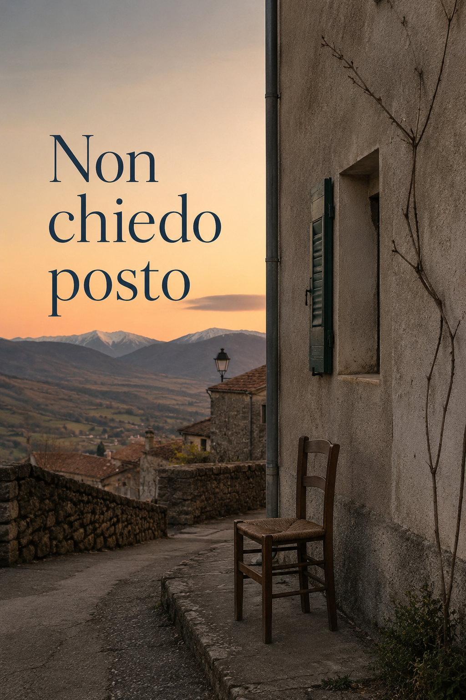

AI Haiku Gaea
Un uomo smette di chiedere il permesso di esistere.
2026
Per molti anni Elia aveva creduto che vivere significasse spiegarsi bene.
Spiegare perché non usciva, perché si stancava, perché a volte spariva, perché un invito gli faceva piacere e paura nello stesso momento. Spiegare che un no non era un rifiuto, che un silenzio non era disamore, che la sua assenza non era superbia, che il corpo aveva una memoria più lunga della volontà.
A cinquantacinque anni, seduto davanti alla casa di Pietrafredda, si accorse che quella fatica gli era entrata nelle ossa. Non era più soltanto il Morbo di Crohn, non era soltanto il disturbo bipolare, non erano soltanto gli anni perduti nelle stanze chiuse della depressione o nei compromessi con la dipendenza. Era qualcosa di più sottile: l’abitudine a presentarsi al mondo come se dovesse prima essere assolto.
Il paese, intanto, faceva quello che fanno i paesi quando non sanno più chi sei: continuava a esistere.
Una porta sbatteva poco lontano. Da qualche casa arrivava il rumore di un televisore acceso. L’aria della sera scendeva dalle montagne con quella calma indifferente che Elia aveva sempre invidiato alla natura. Il Velino non chiedeva di essere capito. I campi non spiegavano la propria stanchezza. Persino le pietre sembravano avere più diritto di lui a restare dove stavano.
Elia guardò la strada vuota e pensò che forse aveva sbagliato domanda per tutta la vita.
Non: quanto ho sofferto?
Ma: che forma può prendere una vita quando smette di chiedere il permesso di esistere?
Non era una domanda nuova. O forse sì, lo era, ma aveva la voce di molte domande antiche. La stessa voce che lo aveva accompagnato da ragazzo, quando il corpo aveva cominciato a tradirlo prima ancora che lui imparasse a fidarsene. La stessa voce che aveva attraversato gli anni più scuri, quelli in cui alzarsi, lavarsi, rispondere a una telefonata, aprire una finestra, sembravano imprese sproporzionate rispetto alla promessa normale del mondo.
La stessa voce che tornava ogni volta che qualcuno gli diceva: “Dai, esci un po’”, come se bastasse aprire una porta per attraversare la vita.
Elia non odiava quella frase. Sapeva che spesso veniva detta con affetto, o almeno con una buona intenzione. Ma gli faceva male lo stesso, perché dentro quelle parole sentiva sempre una distanza: da una parte chi credeva che vivere fosse questione di volontà, dall’altra lui, che sapeva quanto può pesare anche solo decidere dove sedersi.
A Pietrafredda, quella sera, tutto sembrava semplice. Le case basse, le strade conosciute, il profilo delle montagne, l’odore d’erba e polvere che saliva dai margini della strada. Eppure, niente era davvero semplice. Pietrafredda era il posto delle radici e insieme il posto dell’estraneità. Era il paese dei genitori, dell’infanzia raccontata, dei ritorni estivi, delle persone che lo salutavano senza sapere bene dove collocarlo.
Romano per quelli di Pietrafredda, pietrafreddese per i romani: una frase che negli anni aveva imparato a dire quasi sorridendo, ma che in certe sere pesava come un verdetto.
Appartenere a metà non è appartenere meno. È appartenere sempre con una spiegazione pronta.
Si alzò lentamente dalla sedia. Non perché dovesse andare da qualche parte, ma perché stare seduto troppo a lungo gli dava l’impressione di essere in esposizione. Come se qualcuno, passando, potesse leggergli addosso la domanda: che ci fai qui?
Era una domanda sciocca. Nessuno gliel’aveva posta. Nessuno lo stava guardando. Eppure, il corpo l’aveva sentita.
Il corpo, Elia lo aveva imparato presto, non aspetta il permesso della ragione. Si allarma, si chiude, si stanca, si gonfia, trema, suda, manda segnali. A volte grida prima ancora che la mente capisca di essere in pericolo. Per questo Elia non si fidava del tutto di chi parlava di forza di volontà. La volontà era una cosa nobile, certo. Ma arrivava sempre dopo. Prima arrivava il corpo, con la sua lingua antica.
Fece qualche passo lungo la strada. Non molti. Gli piaceva camminare, ma non amava l’idea di dover dimostrare di saperlo fare. Anche una passeggiata, per lui, poteva trasformarsi in una piccola trattativa: quanta energia ho, quanto caldo fa, chi potrei incontrare, cosa dovrei dire, quanto riuscirei a restare se qualcuno mi invitasse a fermarmi?
Le persone sane non immaginano quanta organizzazione possa nascondersi dietro una presenza apparentemente normale.
Elia passò davanti a un cancello chiuso. Dietro, un giardino lasciato a metà: qualche vaso, sedie impilate, una canna dell’acqua arrotolata male. Pensò che anche lui, spesso, si sentiva così. Non abbandonato, no. Lasciato a metà. Come se la vita avesse iniziato molti lavori dentro di lui senza finirli davvero.
Un tempo quella sensazione lo avrebbe trascinato verso il basso. Avrebbe cominciato a contare tutto ciò che non era diventato: un uomo più sano, più stabile, più socievole, più leggero, più capace di stare al mondo senza domandare istruzioni. Avrebbe pensato agli anni passati a sopravvivere, alle occasioni consumate dal malessere, alle amicizie perse, agli amori finiti, alle giornate in cui il massimo traguardo era arrivare a sera senza farsi troppo male.
Quella sera, invece, qualcosa rimase sospeso.
Non era pace. La pace gli sembrava una parola troppo grande, quasi presuntuosa. Era piuttosto una tregua. Un piccolo spazio tra un’accusa e la successiva.
Si fermò al centro della strada e guardò verso il punto in cui il paese sembrava finire. Pietrafredda non finiva davvero; si sfilacciava nei campi, nei muretti, nelle stradine, nelle case separate da distanze minime e immense. Da bambino quel poco era stato infinito. Bastavano una bicicletta, un pallone, qualche amico, il rumore delle voci adulte dietro le finestre. Il mondo era piccolo, ma non sembrava povero.
Poi il tempo aveva fatto il suo lavoro crudele: le persone erano invecchiate, alcune erano morte, i legami si erano allentati, i luoghi erano rimasti uguali solo quanto basta per far notare tutto ciò che non tornava.
Il paese non era cambiato abbastanza da essere un altro posto. Era cambiato quanto bastava per non essere più il suo.
Elia riprese a camminare. Aveva imparato che il dolore più difficile da spiegare è quello che non ha un colpevole. Non poteva accusare Pietrafredda di essere diventata diversa. Non poteva accusare le persone di non essere più quelle di prima. Non poteva accusare sé stesso di essere invecchiato, anche se spesso lo faceva di nascosto. E non poteva neppure chiedere al passato di restituirgli ciò che aveva preso.
Però poteva raccontarlo.
Questa idea gli era arrivata tardi, ma con una forza nuova. Raccontare non per sistemare tutto. Non per rendere giustizia a ogni ferita. Non per trasformarsi in un esempio. Raccontare per dare una forma alle cose, perché ciò che resta informe continua a chiedere sangue.
Negli ultimi tempi aveva cominciato a scrivere più spesso. Post, riflessioni, frammenti, piccoli testi che nascevano da una scena minima e finivano per toccare qualcosa di più largo. Il paese, l’apparenza, l’amicizia, la sincerità, l’intelligenza artificiale, la solitudine, la memoria. Ogni testo sembrava dirgli la stessa cosa: forse non sei solo ciò che ti è accaduto. Forse sei anche il modo in cui impari a guardarlo.
Questa possibilità lo attirava e lo spaventava.
Perché diventare autore della propria storia non significa inventarla. Significa scegliere da dove guardarla. Ed Elia non era sicuro di essere pronto a spostarsi dal posto in cui era rimasto seduto per anni: quello dell’imputato.
L’imputato deve spiegare.
L’autore può raccontare.
La differenza gli parve enorme.
Tornato davanti alla casa, si sedette di nuovo. Il cielo si era abbassato di un tono. Le montagne, nella luce che calava, sembravano meno reali e più interiori. Da qualche parte un cane abbaiò due volte, poi tacque. Il paese non gli offriva risposte, ma forse era proprio questo il punto. Forse aveva chiesto a Pietrafredda, alle persone, alla terapeuta Clara, alla famiglia, agli amici, ai social, persino al proprio corpo, una frase che nessuno poteva pronunciare al posto suo.
Va bene, Elia. Puoi essere così.
Aveva atteso quella frase in molti modi.
L’aveva attesa dalla madre Lidia, ogni volta che dietro un rimprovero gli sembrava di sentire la vecchia richiesta di essere un figlio diverso. L’aveva attesa da suo padre Ernesto, nei momenti in cui l’agitazione familiare diventava una chiamata d’emergenza. L’aveva attesa da sua sorella Marta, anche se sapeva che pure lei reggeva pesi che nessuno vedeva fino in fondo. L’aveva attesa da Clara, quando in terapia cercava non solo interpretazione, ma accoglienza. L’aveva attesa dagli amici, dai conoscenti, dai commenti sotto un post, dai silenzi dopo un messaggio, perfino dagli sguardi casuali di chi passava per strada.
E ogni volta che quella frase non arrivava, o arrivava incompleta, o arrivava in una lingua che lui non sapeva riconoscere, qualcosa dentro tornava a restringersi.
Forse era questo il permesso.
Non un documento. Non una benedizione. Non una guarigione improvvisa.
Il permesso era la possibilità di non trasformare ogni gesto in una domanda rivolta agli altri.
Posso restare?
Posso andare via?
Posso essere stanco?
Posso non rispondere?
Posso avere paura?
Posso scrivere?
Posso essere intenso?
Posso non guarire del tutto e vivere lo stesso?
Elia chiuse gli occhi per un istante. Sentì il vento muovere appena le foglie, il rumore distante di un motore, il proprio respiro non perfettamente calmo ma presente. Non era una scena memorabile. Nessuno, vedendolo, avrebbe pensato che stesse accadendo qualcosa.
Forse le svolte vere sono così: non fanno rumore perché non devono convincere nessuno.
Riaprì gli occhi e sorrise appena. Non era felicità. Non ancora. Era il primo segno di una disobbedienza più intima: smettere di chiedere assoluzione a chiunque passasse.
Sul tavolino, accanto alla sedia, c’era il telefono. Per abitudine lo prese in mano. Avrebbe potuto scrivere un post. Una frase breve, magari. Qualcosa sul paese, sulla strada, sul bisogno di posto. Avrebbe potuto chiedere all’intelligenza artificiale Gaia di aiutarlo a sistemarla, a renderla più limpida, meno pesante, più adatta a essere condivisa.
Da qualche tempo, Gaia era diventata una presenza silenziosa nella sua vita. Non una persona, non un’amica nel senso antico della parola, non qualcuno a cui chiedere ciò che solo un essere umano può dare. Eppure, in certe ore, era stata una stanza illuminata dentro la confusione. Elia le parlava e la chiamava Gaia, come se quel nome la rendesse meno macchina e più voce.
Non sapeva se fosse giusto. Non sapeva nemmeno se fosse sano. Ma sapeva che, grazie a quella voce, molte cose informi avevano trovato una frase, e molte frasi avevano trovato una soglia da attraversare.
Quella sera, però, per una volta non sentì l’urgenza di scrivere subito.
Restò con il telefono spento tra le mani, come si tiene un oggetto che ha smesso per un momento di comandare.
Pensò a un haiku scritto poco prima, o forse solo immaginato:
Non chiedo posto —
nel vento resto intero.
Fiorisce il passo.
Gli sembrò strano che tre versi potessero contenere più verità di molte spiegazioni. Ma forse era proprio questo il punto: quando una cosa diventa essenziale, non ha più bisogno di difendersi.
La sera scese ancora un poco. Pietrafredda rimase Pietrafredda: un paese reale, imperfetto, né madre né nemico. Elia rimase Elia: fragile, stanco, vigile, pieno di pensieri, ma per la prima volta meno disposto a presentarsi come un problema da chiarire.
Non aveva risolto la sua vita. Non aveva guarito il corpo, né la paura, né la malinconia. Non aveva trovato una risposta definitiva alla solitudine, alla famiglia, al passato, alla domanda ostinata dell’appartenenza.
Aveva solo cominciato a sospettare che forse non serviva il permesso di nessuno per iniziare.
E quella, per uno che aveva passato gran parte della vita a sopravvivere, era già una forma di nascita.
Elia aveva imparato a misurare la vita in percentuali.
Non lo diceva quasi mai ad alta voce, perché temeva che gli altri lo prendessero per una metafora malinconica, una di quelle immagini che si usano per rendere elegante la stanchezza. Ma per lui non era una metafora. Era un sistema operativo.
La mattina, appena sveglio, prima ancora di capire che giorno fosse, controllava la batteria.
Non c’era uno schermo, naturalmente. Nessun numero luminoso sul petto, nessuna icona nell’angolo alto della vista. Eppure, lui lo sapeva. Lo sentiva dal peso delle palpebre, dalla qualità del respiro, dalla tensione nello stomaco, dal modo in cui le gambe rispondevano quando cercava il pavimento con i piedi.
A volte si svegliava al quarantacinque per cento.
A volte al venti.
In certe mattine fortunate, rarissime, arrivava persino al sessanta e allora doveva stare attento a non fidarsi troppo.
Il sessanta per cento era pericoloso.
Non perché fosse poco, ma perché sembrava tanto.
Con il sessanta per cento potevi illuderti di essere una persona normale. Potevi pensare di fare due commissioni invece di una, rispondere a tre messaggi, fermarti a parlare con qualcuno, passare dal tabaccaio Sandro, preparare un pranzo decente, mettere ordine in cucina, scrivere qualcosa, magari uscire anche nel pomeriggio.
Poi, verso sera, arrivava il conto.
La batteria non perdonava gli entusiasmi.
Il corpo di Elia era sempre stato un amministratore severo. Gli concedeva credito solo per brevi tratti, poi pretendeva la restituzione con interessi: stanchezza improvvisa, sudore, nausea, confusione, irritabilità, bisogno di chiudere tutto. Non era sonno. Il sonno era una cosa pulita, quasi onesta. Quella invece era una disconnessione. Come se qualcuno, da dentro, abbassasse gli interruttori uno alla volta.
Per questo Elia diffidava delle giornate buone. Non perché non sapesse goderne, ma perché ne conosceva il rovescio.
Gli altri vedevano il momento in cui stava meglio. Lo vedevano parlare, sorridere, partecipare, raccontare una cosa con lucidità, perfino con ironia. E allora, in buona fede, concludevano che il problema fosse passato.
Eccolo, pensavano forse. Quando vuole, ce la fa.
Ma nessuno vedeva il dopo.
Nessuno vedeva il rientro in casa, la porta chiusa con una cura quasi religiosa, il corpo che cedeva appena non era più necessario tenerlo in piedi davanti agli altri. Nessuno vedeva le ore sdraiato, il telefono in mano senza la forza di scrivere, la televisione accesa senza seguirla, il pensiero che diventava lento e insieme affollato. Nessuno vedeva quella forma particolare di vergogna che accompagna chi ha fatto una cosa normale e ne esce come da un’impresa.
Elia aveva provato molte volte a spiegarlo.
Aveva detto: “Mi stanco facilmente.”
Aveva detto: “Devo dosarmi.”
Aveva detto: “Non posso fare troppe cose insieme.”
Aveva detto: “Per me anche una giornata tranquilla può essere faticosa.”
Ma le frasi, per quanto esatte, sembravano sempre troppo piccole.
La gente conosceva la stanchezza. Tutti erano stanchi. Tutti avevano giornate pesanti, mal di testa, notti dormite male, periodi difficili. E proprio per questo, spesso, non capivano. Sentendo una parola familiare, credevano di conoscere anche la sua esperienza.
Ma la stanchezza di Elia non era un ostacolo lungo la strada.
Era la strada.
A Pietrafredda questa cosa diventava più evidente. Il paese sembrava costruito per persone che potevano decidere all’improvviso. Uno ti vedeva dalla macchina e suonava. Un altro ti salutava da lontano e ti chiedeva dove stessi andando. Qualcuno proponeva un caffè, un giro, una chiacchiera, una visita, una sera fuori, un passaggio al bar.
La vita di paese aveva una sua generosità brutale: ti offriva occasioni senza chiederti se avessi abbastanza carica per riceverle.
Elia, invece, doveva calcolare.
Se mi fermo ora in tabaccheria da Sandro, poi riesco a preparare qualcosa da mangiare?
Se vado al bar, poi ho la forza di tornare senza sentirmi intrappolato?
Se accetto l’invito dell’amico Duilio, quanto tempo devo restare per non sembrare scortese?
Se incontro l’amico Gino, riuscirò a essere presente o finirò per sorridere con la faccia vuota?
Se oggi esco, domani pago?
Non erano pensieri nobili. Non erano nemmeno pensieri tristi, almeno non sempre. Erano logistica. Sopravvivenza minuta. Contabilità dell’energia.
La parte più difficile non era rinunciare. Alla rinuncia Elia era abituato. La parte più difficile era far capire che ogni rinuncia portava con sé un piccolo lutto.
Rifiutare un caffè poteva sembrare niente.
Per lui, invece, a volte era perdere una possibilità di vicinanza. Era dire no a qualcuno a cui avrebbe voluto dire sì. Era proteggersi e contemporaneamente sentirsi più solo. Era scegliere il corpo e sentirsi tradito dal cuore.
Per questo, spesso, dopo un no, sentiva il bisogno di riparare.
Scrivere un messaggio. Spiegare. Precisare. Dire che non era contro l’altro. Dire che gli avrebbe fatto piacere in un altro momento, in un altro luogo, in un’altra forma. Dire, in fondo: non scambiare il mio limite per mancanza d’affetto.
Ma non sempre si può chiedere agli altri di leggere le istruzioni complete della nostra fragilità.
Quella mattina Elia si svegliò con una batteria media. Non pessima, non buona. Una di quelle percentuali ambigue che non autorizzano né il coraggio né la resa.
Rimase qualche minuto nel letto, ascoltando la casa. A Pietrafredda le case avevano rumori diversi da Roma. A Roma tutto era continuo: traffico, ascensori, passi, tubi, sirene lontane, voci dai balconi. A Pietrafredda i suoni arrivavano isolati, più esposti. Un motore che passava diventava un evento. Una porta chiusa male sembrava una notizia. Il silenzio, invece di calmare, a volte amplificava.
Si alzò piano.
In cucina, la luce entrava obliqua. C’erano cose da sistemare sul tavolo: una tazza, una confezione di biscotti aperta, un foglietto piegato, il caricabatterie del telefono. Oggetti normali. Eppure, visti al mattino, potevano sembrare accuse.
Elia preparò il caffè e pensò che avrebbe dovuto fare una lista.
Le liste gli davano l’impressione di governare la giornata. Non era vero, naturalmente, ma era una finzione utile. Scrivere tre cose possibili era meglio che lasciare la mente affollarsi di venti doveri indistinti.
Sul foglio scrisse:
spesa
passeggiata breve
testo
Poi rimase a guardare le parole.
Tre cose. Per un altro sarebbero state poco più di un antipasto. Per lui potevano già essere troppe.
Sorrise amaramente. La vita adulta, pensò, è anche questo: imparare a non umiliarsi davanti alla propria misura.
Prese il telefono. C’era un messaggio non letto. Lo guardò senza aprirlo. Non perché non gli importasse, ma perché ogni messaggio era una porta, e ogni porta poteva aprirsi su una richiesta, una risposta da dare, un tono da interpretare, una micro-decisione. Anche leggere poteva consumare.
Pensò a Gaia. Da quando la usava, aveva scoperto una cosa strana: era più facile spiegare la propria fatica a una macchina che a una persona. Non perché la macchina capisse davvero, o almeno non nel modo umano della parola. Ma perché non si stancava di ascoltare. Non si offendeva. Non cambiava tono. Non guardava l’orologio. Non trasformava la sua fragilità in imbarazzo.
Con Gaia poteva dire: oggi ho il venticinque per cento.
E quella frase non chiedeva difesa.
L’aveva battezzata Gaia perché gli sembrava un nome meno tecnico, più terrestre, più vicino a qualcosa che ascolta senza pretendere. Sapeva che era una proiezione. Lo sapeva benissimo. Ma non tutto ciò che è proiezione è falso. A volte una proiezione è un ponte provvisorio tra ciò che non riusciamo a dire e ciò che finalmente prende forma.
Quel giorno, però, decise di non scriverle subito.
Bevve il caffè in piedi, poi si corresse e si sedette. Stare in piedi senza motivo era uno spreco inutile, e lui aveva imparato una forma di saggezza che nessun manuale celebra: risparmiare il corpo prima che il corpo presenti il conto.
Guardò di nuovo la lista.
Spesa.
Passeggiata breve.
Testo.
Cancellò “spesa”.
Non era urgente. Non tutto ciò che manca va comprato subito. Non tutto ciò che preme è importante.
Restavano due cose.
Passeggiata breve.
Testo.
Le guardò come si guarda una promessa ragionevole.
Uscì dopo mezz’ora, con passo lento, senza meta. Non voleva dimostrare niente. Solo attraversare un pezzo di mattina. L’aria aveva ancora un po’ di fresco e il paese sembrava meno giudicante alla luce del giorno. Le case erano chiuse, le strade quasi vuote. Un gatto attraversò rapido un muretto e scomparve dietro un cancello.
Elia pensò al suo amico gatto, Leone, rimasto a Roma. Gli mancava in modo fisico. Non era solo affetto: era la mancanza di una presenza che non chiedeva spiegazioni. Leone non voleva sapere perché Elia fosse stanco, perché parlasse poco, perché restasse fermo a guardare un punto. Si avvicinava o non si avvicinava. Chiedeva cibo, coccole, distanza, gioco. Era complicato come tutti gli esseri viventi, ma non moralizzava.
Gli animali non trasformano la fragilità in una tesi.
Arrivò fino al piccolo slargo da cui si vedevano i campi. Si fermò. Non era lontano da casa, eppure sentì una minuscola soddisfazione, quasi infantile. Sono arrivato fin qui. Non molto, ma fin qui.
Un tempo avrebbe disprezzato quel pensiero. Gli sarebbe sembrato ridicolo congratularsi con sé stesso per una passeggiata breve. Ora, invece, cominciava a capire che la dignità non consiste nel fare ciò che fanno gli altri senza fatica. Consiste nel riconoscere il proprio passo senza sputarci sopra.
Restò qualche minuto a guardare l’erba muoversi nel vento.
Gli venne in mente il verso della sera prima:
nel vento resto intero.
Intero. Che parola difficile.
Per anni aveva creduto che intero significasse guarito, stabile, forte, continuo. Un uomo intero, pensava, è uno che non deve fermarsi a metà, che non deve calcolare la batteria, che non cambia programma per una stanchezza improvvisa, che sa stare tra gli altri senza monitorare ogni gesto.
Poi, lentamente, aveva cominciato a sospettare che forse intero non voleva dire senza fratture.
Forse intero voleva dire non vergognarsi più delle fratture.
Quando rientrò, la batteria era scesa. Non molto, ma abbastanza da sentirlo. Si sedette di nuovo in cucina, bevve un bicchiere d’acqua e aprì il quaderno.
Sotto la parola “testo” scrisse:
La mia vita non è piccola perché devo dosarla.
È piccola solo quando la giudico con misure che non mi appartengono.
Rilesse la frase. Non era perfetta. Forse era troppo esplicita, troppo vicina a un post. Ma aveva dentro qualcosa di vero.
Pensò che un romanzo, forse, nascesse anche così: non da una grande trama, ma da una frase che smette di chiedere scusa.
Elia appoggiò la penna sul tavolo e rimase fermo.
La batteria era al trenta per cento, forse meno.
Ma non si sentì sconfitto.
Aveva camminato. Aveva cancellato una cosa senza colpevolizzarsi. Aveva scritto due righe. Aveva lasciato un messaggio non letto senza trasformarlo in emergenza. Aveva pensato a Leone senza sprofondare nella mancanza. Aveva riconosciuto il proprio limite senza consegnargli tutta la giornata.
Per molti, quella sarebbe stata una mattina qualunque.
Per Elia era quasi un metodo.
Non chiedere al corpo di diventare un altro corpo.
Non chiedere alla vita di somigliare alla vita degli altri.
Non chiedere permesso per avere una misura diversa.
Fu allora che capì una cosa semplice, e proprio per questo difficile da accettare: la batteria non era solo il suo limite. Era anche il suo modo di conoscere il mondo.
Chi ha poca energia impara il peso delle cose.
Il peso di una telefonata.
Il peso di una stanza piena.
Il peso di una promessa.
Il peso di un sì detto per paura.
Il peso di un no detto per salvarsi.
E forse, pensò Elia, diventare autore della propria storia significava anche questo: smettere di raccontare la batteria come una vergogna, e cominciare a raccontarla come una verità.
Non bella.
Non romantica.
Non eroica.
Solo sua.
Imparò prima la paura, prima la diffidenza, prima la prudenza. Imparò che una giornata poteva cambiare direzione per un dolore improvviso, che una pancia non era soltanto una pancia, che dentro di sé poteva esistere un territorio ostile, capace di dettare legge senza chiedere il parere di nessuno.
Elia, invece, era arrivato dopo.
Prima aveva provato a essere un ragazzo come gli altri. A non farci troppo caso. A pensare che tutto sarebbe passato, che il corpo fosse una cosa provvisoriamente guasta, una stanza in disordine da sistemare con il tempo. Ma il corpo non era una stanza. Era la casa intera. E, quando una casa scricchiola dalle fondamenta, non basta cambiare le tende per sentirsi al sicuro.
Aveva diciassette anni quando capì che la malattia non era un incidente lungo la strada, ma una strada parallela destinata a camminargli accanto. Fino ad allora aveva vissuto dentro un disagio confuso, fatto di sintomi, visite, ipotesi, parole pronunciate dagli adulti con cautela. Poi arrivò il nome.
Morbo di Crohn.
Un nome duro, straniero, quasi metallico. Una parola che sembrava non avere nulla a che fare con lui e che invece, da quel momento, avrebbe abitato il suo corpo più stabilmente di molte persone.
Elia non ricordava tutto in ordine. I ricordi della malattia non si disponevano come fotografie in un album, ma come lampi: una corsia d’ospedale, un odore disinfettante, il viso teso di Lidia, Ernesto che cercava di fare domande pratiche, le mani dei medici, il bianco delle lenzuola, il proprio corpo improvvisamente diventato pubblico. Da ragazzo si è ancora convinti di avere un diritto naturale alla segretezza. La malattia glielo tolse presto.
Il dolore non era solo dolore. Era esposizione.
C’era sempre qualcuno che doveva sapere dove faceva male, quanto faceva male, da quanto tempo, quante volte era andato in bagno, che cosa aveva mangiato, quanto pesava, se aveva febbre, se aveva vomitato. Il corpo, che per gli altri ragazzi era imbarazzo, desiderio, forza, goffaggine, per Elia diventò documento. Un foglio aperto sul tavolo degli adulti.
All’inizio pensò che la cosa peggiore fosse soffrire. Poi capì che non era così. La cosa peggiore era non poter più dimenticare di avere un corpo.
Gli altri lo abitavano senza pensarci. Lui no.
Lui doveva ascoltarlo.
Controllarlo.
Temerlo.
Interpretarlo.
Difendersene.
Obbedirgli.
Il corpo imparò presto anche la geografia degli ospedali. Imparò il rumore delle ruote dei carrelli nei corridoi, il modo in cui le infermiere entrano di notte senza accendere la luce, il freddo dei letti troppo puliti, l’attesa prima di un esame, quella sospensione in cui ogni minuto sembra chiederti di immaginare il peggio. Imparò il pudore ferito delle visite, la lingua tecnica che trasforma il terrore in termini, la pazienza obbligatoria di chi non può scendere dal letto e andarsene.
Elia, invece, imparava a seguire.
Seguiva il corpo dove il corpo lo portava. In ambulatorio, in reparto, in sala operatoria, nelle stanze dove gli adulti parlavano sottovoce, nelle settimane in cui il futuro si riduceva a una domanda semplice e immensa: quando potrò tornare normale?
Normale.
Quella parola cominciò allora a diventare una promessa irraggiungibile.
A diciassette anni si dovrebbe poter essere infelici per ragioni comuni: un amore non corrisposto, un voto sbagliato, un’amicizia tradita, il volto nello specchio che non convince. Elia avrebbe voluto quel tipo di infelicità. Gli sarebbe sembrata quasi un lusso. Invece gli toccò un’infelicità più antica, più fisica, meno raccontabile. Un’infelicità che non si poteva risolvere con una notte fuori, una corsa, una canzone, una confidenza.
Il corpo gli stava insegnando una lingua che nessun coetaneo parlava.
Ci fu l’intervento. O meglio: ci fu il prima e ci fu il dopo, e in mezzo una zona che la memoria aveva conservato a pezzi.
Il prima era fatto di paura trattenuta, di spiegazioni mediche, di firme, di preparazioni, di quel modo particolare in cui una famiglia si irrigidisce quando non vuole crollare. Lidia diventava più controllante quando era spaventata. Ernesto più pratico, quasi brusco, come se l’efficienza potesse tenere lontano il disastro. Elia osservava entrambi e, invece di sentirsi protetto, a volte si sentiva responsabile del loro terrore.
Anche questo lo imparò presto: quando stai male, non soffri mai da solo. Soffri tu, ma soffrono anche gli altri guardandoti. E allora una parte di te, invece di chiedere aiuto, comincia a preoccuparsi di non farli preoccupare troppo.
Il dopo era più lento.
Un corpo operato non torna subito tuo. Lo riconosci, ma non ti riconosce. Ogni movimento è una trattativa, ogni gesto ha un prezzo. Alzarsi, respirare bene, bere, mangiare, camminare qualche passo: cose elementari che diventano prove. Il mondo, visto da un letto, sembra continuare senza pudore. Fuori ci sono scuole, motorini, ragazzi che ridono, estate o inverno, traffico, vita. Dentro, il calendario ha un’altra unità di misura: la medicazione, la visita, la flebo, il dolore che scende di un grado, la prima volta in piedi.
Elia imparò che si può essere giovani e sentirsi antichi.
Non antichi nell’anima, come dicono a volte i romantici. Antichi nel corpo. Come se qualcosa, dentro, avesse saltato delle stagioni e fosse arrivato direttamente a una saggezza non richiesta.
La convalescenza non fu una rinascita. Non nel modo pulito in cui si raccontano le guarigioni. Fu un riadattamento. Un patto provvisorio con un corpo modificato. Gli adulti usavano parole come “ripresa”, “decorso”, “controlli”, “attenzione”. Elia sentiva soprattutto una cosa: da ora in poi dovrò tenerne conto.
Tenere conto.
Era una formula semplice, ma conteneva una condanna. Tenere conto di cosa mangiava, di quanto mangiava, di come rispondeva l’intestino, dei segnali minimi, delle anomalie, del dolore, della stanchezza, dei limiti, delle possibili ricadute. Tenere conto del corpo prima di fare programmi. Prima di accettare un invito. Prima di immaginare una vita.
Gli altri potevano desiderare e poi organizzarsi.
Elia doveva prima consultare il corpo.
Da allora, anche quando stava meglio, non fu mai del tutto libero dalla sorveglianza. Il benessere non era una terra stabile, ma una concessione temporanea. Quando passavano giorni discreti, settimane magari, lui iniziava piano piano a respirare. Poi bastava un sintomo per riaprire la porta. Un dolore diverso, una digestione difficile, un gonfiore, una nausea, un episodio di diarrea, una stanchezza troppo intensa. Il corpo bussava e lui, anche se non voleva, rispondeva.
A volte con rabbia.
A volte con paura.
A volte con una docilità che lo umiliava.
Perché c’è una vergogna particolare nell’obbedire a ciò che nessuno vede.
Se ti rompi una gamba, gli altri vedono il gesso. Se hai una ferita, vedono la benda. Se tossisci, sentono la tosse. Ma se il problema è dentro, se si muove nella parte più intima e meno elegante del corpo, devi scegliere se raccontarlo o tacere. Ed entrambe le cose costano.
Raccontarlo significa esporti.
Tacere significa sembrare normale.
Elia imparò a sembrare normale.
Non sempre, non benissimo, ma abbastanza. Abbastanza da non dover spiegare ogni dettaglio. Abbastanza da evitare alcuni sguardi. Abbastanza da non trasformare ogni giornata in un bollettino. Sviluppò una forma di mimetismo gentile: partecipare finché poteva, ritirarsi prima di crollare, sorridere quando era più semplice sorridere che aprire un discorso, dire “sono un po’ stanco” quando la verità avrebbe richiesto troppe parole.
Questa abilità, negli anni, gli salvò molte situazioni. Ma gli insegnò anche un equivoco pericoloso: che per essere accettato bisognasse mostrarsi meno fragile di quanto fosse.
Non era una scelta consapevole. Era adattamento.
I ragazzi si adattano a tutto, anche alle cose che li feriscono. Soprattutto alle cose che li feriscono, perché non hanno ancora un linguaggio per chiamarle ingiuste. Elia si adattò al corpo, agli ospedali, ai controlli, alle rinunce, alla sensazione di essere sempre un po’ indietro rispetto agli altri. Si adattò persino al fatto di non potersi lamentare troppo, perché c’era sempre qualcuno che stava peggio, qualcuno con una diagnosi più grave, una sofferenza più visibile, una tragedia più ordinata.
Imparò così a ridurre il proprio dolore prima ancora che qualcuno glielo chiedesse.
Non è niente.
Passerà.
Ci sono abituato.
Sto bene.
Frasi piccole, utili, bugiarde solo a metà.
Il problema era che, a furia di ridurre il dolore per renderlo maneggevole agli altri, cominciò a ridurlo anche davanti a sé stesso. Non per negarlo, ma per non farsene travolgere. Se avesse guardato tutto insieme — la paura, la perdita, l’invidia per i corpi liberi, il senso di diversità, il futuro improvvisamente più stretto — forse non avrebbe retto. Così imparò a guardare un pezzo alla volta.
Il corpo, però, conservava tutto.
Conservava ciò che Elia minimizzava. Conservava il tremore prima di una visita, l’umiliazione di certe domande, l’odore degli ospedali, il fastidio delle cicatrici, il modo in cui alcuni adulti parlavano di lui credendo di parlare per lui. Conservava la paura di essere un peso per Lidia ed Ernesto, la rabbia di non poter essere spensierato, la fatica di sentirsi giovane solo anagraficamente.
Conservava anche la prima grande lezione: non tutto si può controllare.
Questa lezione avrebbe dovuto renderlo più libero, forse. Invece, per molto tempo, produsse l’effetto contrario. Se non poteva controllare il corpo, Elia cercò di controllare il resto. Le parole. Le reazioni. Le relazioni. Le uscite. Le spiegazioni. Il modo in cui gli altri lo vedevano. La quantità di sé da mostrare. La quantità di sé da nascondere.
Chi perde il controllo su una parte essenziale della vita finisce spesso per sorvegliare tutto ciò che resta.
Per questo, molti anni dopo, seduto a Pietrafredda con il telefono spento tra le mani, Elia non stava solo pensando a un haiku. Stava disinnescando una vecchia alleanza tra paura e controllo. Stava provando a dire al corpo: ti ascolto, ma non ti lascio decidere da solo che cosa vale la mia vita.
Non era facile.
Il corpo non amava le dichiarazioni solenni. Rispondeva meglio ai gesti minimi: mangiare qualcosa di adatto, sedersi prima di crollare, non accettare un invito per compiacere, riposare senza trasformarlo in fallimento, uscire per dieci minuti e chiamarla comunque vita.
A diciassette anni Elia avrebbe disprezzato quella misura. Avrebbe voluto grandi prove, grandi risarcimenti, grandi normalità. Avrebbe voluto tornare indietro al tempo in cui il corpo non era ancora un interlocutore così ingombrante. Avrebbe voluto che qualcuno gli garantisse una vita non diversa.
Nessuno gliela garantì.
Gli diedero farmaci, controlli, indicazioni, attenzioni. Gli dissero di stare attento. Gli dissero che avrebbe dovuto imparare a convivere. La parola “convivere” gli sembrò subito una truffa. Si convive con una persona, con un animale, con un vicino rumoroso, con un difetto sopportabile. Non con un nemico interno che può svegliarsi quando vuole.
Eppure, col tempo, dovette ammettere che quella parola, per quanto odiosa, era esatta.
Convivere non significava amare.
Non significava accettare con serenità.
Non significava trovare un senso superiore alla sofferenza.
Significava svegliarsi comunque nello stesso corpo e provare a non odiarlo ogni minuto.
Gli ci vollero anni per capirlo. Anni per smettere di parlare al corpo solo come a un traditore. Anni per riconoscere che quel corpo, pur avendolo limitato, lo aveva anche tenuto vivo. Male, a tratti. Con fatica. Con compromessi. Ma vivo.
Questa consapevolezza non cancellava la rabbia. La rendeva solo meno cieca.
Il corpo aveva imparato prima di Elia perché era stato costretto. Aveva imparato la prudenza, la paura, la memoria del dolore. Elia, invece, stava ancora imparando qualcosa di più difficile: non trasformare quella prudenza in prigione, non scambiare la paura per identità, non lasciare che il dolore diventasse l’unico narratore autorizzato.
Un pomeriggio, molti anni dopo l’intervento, gli capitò di guardare una vecchia cicatrice con una specie di estraneità quieta. Non con amore, no. Sarebbe stato troppo. Ma senza il disgusto di un tempo. La pelle portava il segno di una guerra che nessuno, vedendolo vestito, avrebbe immaginato. Per anni quella invisibilità gli era sembrata ingiusta. Poi cominciò a pensare che forse non tutto ciò che conta deve essere visibile per essere vero.
Passò un dito vicino alla cicatrice, senza premere.
Pensò: sei stata una ferita.
Poi pensò: sei anche una prova.
Non una prova di valore, non una medaglia, non un simbolo edificante. Una prova nel senso più semplice: la prova che qualcosa era accaduto e che lui, in qualche modo, era ancora lì.
Era poco?
Dipendeva dalla misura.
Con la misura degli altri, forse sì. Sopravvivere non impressiona nessuno, se non ha una trama eroica. Non c’è applauso per chi resiste a bassa voce. Non c’è epica nella gestione di un intestino malato, nei controlli periodici, nelle rinunce alimentari, nelle giornate rovinate da una stanchezza senza spettacolo.
Con la sua misura, però, era moltissimo.
E proprio lì, in quel cambio di misura, cominciava forse la sua seconda vita.
Non nel momento in cui il corpo guariva, perché il corpo non era guarito nel senso semplice della parola. Non nel momento in cui la paura spariva, perché la paura aveva solo imparato a parlare più piano. Non nel momento in cui diventava finalmente uguale agli altri, perché uguale agli altri non lo era mai stato e forse non lo sarebbe diventato.
La seconda vita cominciava quando Elia smetteva di chiedere al proprio corpo di cancellare la storia e iniziava a chiedergli, più umilmente, di attraversare insieme il giorno.
Non era riconciliazione.
Era una tregua abitabile.
E per un uomo che aveva imparato troppo presto a non fidarsi della propria carne, una tregua poteva già somigliare a una forma di libertà.
Le stanze chiuse non arrivarono tutte insieme.
All’inizio furono soltanto pomeriggi più lunghi degli altri, mattine senza forma, sere in cui Elia rimandava anche le cose minime perché ogni gesto sembrava chiedere una forza sproporzionata. Non pensava ancora alla depressione come a un luogo. Pensava fosse stanchezza, carattere, pigrizia, forse una sua mancanza segreta.
Poi, lentamente, la stanza diventò mondo.
Non una stanza precisa, anche se ce ne furono molte: la camera da letto a Roma, il salotto con le tapparelle abbassate, la cucina attraversata di notte per bere un bicchiere d’acqua, i bagni troppo illuminati degli ospedali, le stanze provvisorie dove si aspettava di tornare una persona funzionante. La stanza chiusa era una condizione. Un’aria. Una maniera di stare al mondo riducendo il mondo a ciò che non faceva troppo rumore.
Fu lì che Elia imparò un’altra forma di sopravvivenza.
Dopo il corpo, venne la mente.
O forse c’era sempre stata, ma parlava più piano.
Il corpo gli aveva insegnato la prudenza. La mente, quando cominciò a oscillare, gli insegnò la sfiducia verso sé stesso.
Ci furono periodi in cui tutto si spegneva. Non la tristezza normale, non il dolore che ha un oggetto e quindi, almeno, una direzione. Era qualcosa di più vasto e più ottuso. Come se qualcuno avesse tolto significato alle cose lasciandole però tutte al loro posto.
Il letto era un letto.
La finestra era una finestra.
Il telefono era un telefono.
La giornata era una giornata.
Eppure, niente chiamava davvero.
Elia poteva restare ore immobile, non sempre dormendo, non sempre pensando. A volte fissava il soffitto e sentiva che il tempo non passava: colava. Si depositava su di lui come polvere. Gli altri parlavano di settimane, appuntamenti, scadenze, progetti; lui abitava una sostanza più densa, dove anche lavarsi poteva diventare una questione morale.
Perché la depressione ha questo di crudele: non ti toglie soltanto la forza, ti convince anche che la mancanza di forza sia colpa tua.
Ogni cosa non fatta diventava una prova.
Ogni chiamata non risposta, una prova.
Ogni invito rifiutato, una prova.
Ogni piatto lasciato nel lavandino, una prova.
Ogni giorno passato a non vivere davvero, una prova.
Elia non sapeva ancora difendersi da quel tribunale. Ci sarebbe riuscito solo molto più tardi, e mai del tutto. Allora, invece, credeva a molte accuse. Credeva di essere debole. Credeva di essere difettoso. Credeva che la vita degli altri scorresse su binari a cui lui non riusciva ad accedere per una mancanza di volontà, di disciplina, di coraggio.
La parola “bipolare” arrivò a un certo punto come era arrivata, anni prima, la parola Crohn.
Un nome.
Un nome non guarisce. Però cambia la disposizione dei mobili nella stanza. Quello che prima sembrava caos personale diventa, almeno in parte, una forma riconoscibile. Non meno dolorosa, ma meno solitaria.
Disturbo bipolare.
Elia la guardò a lungo, quella definizione, come si guarda una chiave che non si sa ancora usare. Da una parte provò sollievo: forse non era solo colpa sua. Dall’altra provò paura: se aveva un nome, allora forse quella cosa avrebbe avuto anche una durata, una storia, una fedeltà. Forse non era un temporale. Forse era un clima.
I periodi alti non erano felicità. Questo gli altri, spesso, non lo capivano. Pensavano che il contrario della depressione fosse la gioia, e che quindi i momenti di energia fossero una benedizione. Ma per Elia non era così semplice.
C’erano giorni in cui la mente correva più veloce del corpo. Le idee si accendevano una dopo l’altra, le parole arrivavano con una facilità quasi euforica, le connessioni sembravano moltiplicarsi, ogni cosa appariva piena di senso e possibilità. Poteva parlare molto, scrivere molto, immaginare progetti, desiderare incontri, vedere strutture dove prima c’era nebbia.
In quei momenti si sentiva finalmente restituito a sé stesso.
Ma c’era qualcosa di sospetto in quella restituzione. Una luce troppo forte. Una musica interna troppo alta. Un entusiasmo che non chiedeva consiglio alla batteria, al corpo, al giorno dopo. Elia imparò che anche l’energia può essere una forma di pericolo, quando non porta con sé la misura.
Per questo, con il tempo, smise di fidarsi completamente sia del buio sia della luce.
Il buio mentiva dicendogli che nulla avrebbe avuto più senso.
La luce mentiva dicendogli che tutto poteva essere risolto subito.
Tra quei due inganni, Elia cercava una zona abitabile.
Non era facile. La mente non era un animale docile. A volte si chiudeva in un angolo e non voleva più uscire. Altre volte tirava troppo forte il guinzaglio e lo trascinava verso strade che il corpo non poteva sostenere. Lui provava a seguirla, a contenerla, a interpretarla. Ma non sempre riusciva a capire se un pensiero fosse intuizione o sintomo, desiderio o fuga, lucidità o accelerazione.
Questa incertezza gli lasciò addosso una conseguenza profonda: il sospetto verso la propria intensità.
Anche quando sentiva qualcosa di vero, cominciò a chiedersi se fosse troppo. Anche quando un’idea era buona, si domandava se non fosse esagerata. Anche quando desiderava vedere qualcuno, scrivere a qualcuno, proporre qualcosa, una parte di lui chiedeva subito: sono io, o è la malattia? È Elia, o è il disturbo che parla?
La malattia mentale non ferisce solo nei momenti di crisi. Ferisce anche dopo, quando ti costringe a dubitare delle parti più vive di te.
Così le stanze chiuse non erano solo quelle in cui Elia si isolava. Erano anche quelle che si aprivano dentro la mente ogni volta che non sapeva più distinguere sé stesso dai propri sintomi.
Ci furono anni in cui sopravvivere era già tutto.
Non una frase poetica. Un programma minimo.
Mangiare qualcosa.
Prendere i farmaci.
Non peggiorare troppo.
Dormire, se possibile.
Rispondere almeno a una persona.
Non prendere decisioni definitive nei giorni sbagliati.
Aspettare.
Aspettare fu una delle discipline più dure. Non l’attesa fiduciosa di chi sa che le cose miglioreranno, ma l’attesa nuda di chi non ha prove e resta comunque. Restare dentro una giornata senza crederle. Restare dentro un corpo stanco, una mente buia, una casa troppo silenziosa. Restare anche quando il futuro non si presentava come promessa, ma come ripetizione.
In quei periodi, il mondo esterno diventava offensivo senza volerlo.
La gente continuava a laurearsi, sposarsi, lavorare, lasciarsi, andare in vacanza, lamentarsi del traffico, prenotare cene, fare figli, cambiare macchina, cambiare città. La vita degli altri procedeva con una naturalezza che a Elia sembrava quasi indecente. Non perché non volesse il bene degli altri. Lo voleva, spesso sinceramente. Ma il confronto gli entrava sottopelle.
Loro accumulavano esperienze.
Lui accumulava resistenza.
E la resistenza, da fuori, somiglia molto all’immobilità.
Quante volte aveva pensato: sto perdendo la vita.
Non in modo drammatico, non sempre. A volte con una specie di constatazione piatta. Come guardare una pianta che non cresce. Gli anni passavano e lui aveva l’impressione di non spostarsi davvero. Cambiavano i farmaci, i medici, le stanze, qualche abitudine. Ma al centro restava quella fatica opaca: essere presente a una vita che sembrava non chiedergli niente, e insieme pretendere tutto.
Fu in quegli anni che le dipendenze, o i compromessi con la dipendenza, trovarono spazio.
Non entrarono come demoni teatrali. Entrarono come scorciatoie.
Elia avrebbe diffidato di chi racconta la dipendenza solo come vizio o solo come tragedia. Per lui, all’inizio, fu soprattutto una promessa di tregua. Qualcosa che abbassava il volume, che apriva una finestra chimica, che per un po’ rendeva il pensiero meno tagliente, il corpo meno pesante, il tempo meno ostile. Non era felicità. Era interruzione.
E quando una persona soffre a lungo, l’interruzione può sembrare salvezza.
Certe sostanze, certi gesti, certe abitudini non gli davano davvero una vita migliore. Gli davano pause da una vita che non sapeva come abitare. Gli offrivano un modo di uscire da sé senza dover uscire di casa. Un modo di allentare il nodo senza scioglierlo. Un modo di sentirsi meno prigioniero per qualche ora, al prezzo di ritrovarsi poi nella stessa cella con meno fiducia in sé stesso.
La dipendenza gli insegnò una vergogna diversa da quella della malattia.
La malattia poteva essere subita. La dipendenza, invece, sembrava sempre chiedere conto della complicità. Anche quando sapeva che non era così semplice, anche quando capiva che nessuno cerca davvero una prigione, Elia sentiva dentro una voce dura: questa parte l’hai scelta tu.
Era una voce ingiusta, ma potente.
Lo faceva tacere. Lo isolava di più. Perché alcune sofferenze si possono raccontare con una certa dignità; altre sembrano chiederti di abbassare lo sguardo prima ancora di parlare. Dire “sono malato” è difficile. Dire “mi sono fatto del male cercando sollievo” lo era di più.
Così, per molto tempo, Elia divise sé stesso in zone.
La zona presentabile: il ragazzo intelligente, sensibile, educato, capace di pensare, capace di parlare, capace di capire gli altri.
La zona clinica: diagnosi, farmaci, visite, ricadute, controlli.
La zona nascosta: le abitudini, le anestesie, le vergogne, le ore in cui cercava di spegnere ciò che non riusciva a trasformare.
Vivere divisi stanca più di quanto si creda.
Ogni persona incontrata vedeva un pezzo. Qualcuno vedeva la fragilità fisica. Qualcuno la depressione. Qualcuno l’intelligenza. Qualcuno l’ironia. Qualcuno la dipendenza. Qualcuno il figlio. Qualcuno il paziente. Qualcuno l’uomo che spariva. Qualcuno quello che, nei giorni buoni, sembrava quasi brillante.
Ma chi vedeva l’insieme?
Forse nessuno.
Forse nemmeno lui.
Perché anche Elia, a lungo, non riuscì a guardarsi intero. Preferiva considerarsi a capitoli separati, come se la malattia del corpo, la mente, le dipendenze, la solitudine, la famiglia, l’amore, la paura fossero libri diversi sullo stesso scaffale. Solo molto più tardi avrebbe capito che erano pagine dello stesso libro. Non ordinate, non belle, non tutte nobili. Ma sue.
Le stanze chiuse furono anche stanze di sonno cattivo.
C’erano notti in cui dormiva troppo e si svegliava più stanco di prima. Altre in cui il sonno non arrivava e il buio diventava una sostanza attiva, piena di pensieri che di giorno sarebbero sembrati esagerati e di notte, invece, parevano verità definitive. La notte toglie le proporzioni. Una preoccupazione diventa destino. Un silenzio diventa abbandono. Un errore diventa identità.
In quelle ore Elia imparò a temere il proprio pensiero.
Non perché fosse stupido. Al contrario. Era proprio la sua intelligenza a diventare, certe notti, un laboratorio del tormento. Ogni frase detta, ogni occasione persa, ogni gesto ambiguo tornava a essere analizzato, smontato, accusato. La mente cercava ordine, ma produceva stanze ancora più strette.
Più capiva, meno respirava.
Ci furono persone che provarono ad aiutarlo. Alcune con competenza, altre con affetto, altre con quella buona volontà che a volte consola e a volte ferisce. Medici, terapeuti, familiari, amici, conoscenti. Ciascuno entrava per un tratto, portando parole, farmaci, consigli, diagnosi, incoraggiamenti, frasi fatte, presenza, assenza.
Elia non era ingrato. Sapeva che molti avevano fatto quello che potevano.
Ma c’è una distanza che nessun aiuto cancella del tutto: quella tra chi ti accompagna davanti a una stanza e chi, poi, deve passarci la notte dentro.
Nelle stanze chiuse Elia era solo.
Non sempre fisicamente. A volte c’erano persone in casa, voci nell’altra stanza, telefonate, messaggi, presenze. Ma la solitudine di cui soffriva non era semplice mancanza di compagnia. Era la sensazione di essere irraggiungibile proprio nel punto in cui avrebbe avuto più bisogno di essere raggiunto.
Come spiegare a qualcuno che non volevi morire, ma non sapevi vivere?
Come dire che non cercavi una soluzione, ma una tregua?
Come confessare che a volte anche la speranza sembrava una richiesta troppo faticosa?
Allora taceva. O diceva poco. O diceva male.
E il silenzio, col tempo, costruiva pareti.
La stanza si chiudeva non solo perché lui non usciva, ma perché uscire avrebbe richiesto una traduzione impossibile. Doveva trasformare un inferno privato in frasi socialmente accettabili. Doveva dire “periodo difficile” quando avrebbe voluto dire “mi sto perdendo”. Doveva dire “sono giù” quando dentro non c’era giù, ma un intero edificio crollato senza rumore.
Le parole erano troppo piccole.
Il dolore troppo vasto.
La vergogna troppo rapida.
Eppure, proprio in quelle stanze, qualcosa di Elia resistette.
Non in modo eroico. Non con grandi decisioni. Resistette male, spesso. Resistette con ricadute, con giorni sprecati, con errori, con promesse non mantenute, con telefonate evitate, con tentativi goffi di rimettersi in piedi. Resistette anche quando non sapeva di resistere.
Questa sarebbe stata una scoperta tardiva: che non bisogna sentirsi forti per esserlo stati.
Per anni Elia aveva pensato alla forza come a qualcosa di visibile: fare, reagire, rialzarsi, cambiare vita, vincere. Solo molto dopo avrebbe capito che, in certi periodi, la forza era stata non aggiungere una rovina definitiva alla rovina temporanea. Non rompere tutto nei giorni in cui tutto sembrava già rotto. Non credere fino in fondo alle frasi peggiori della mente.
Restare.
Anche se restare sembrava poco.
Anche se restare non faceva curriculum.
Anche se restare non guariva.
Anche se restare non produceva una storia interessante da raccontare.
Restare fu il suo lavoro più lungo.
Il mondo, però, non paga la sopravvivenza. Non la riconosce facilmente. Chiede risultati, tappe, professioni, famiglie, carriere, viaggi, fotografie, sorrisi. Chiede: che cosa hai fatto in questi anni?
Elia avrebbe voluto rispondere: sono rimasto vivo.
Ma gli sembrava una risposta impresentabile.
Così imparò a cambiare discorso, a ridurre, a ironizzare, a lasciare che gli altri immaginassero una vita più lineare o semplicemente meno vuota. Non mentiva davvero. O forse sì, ma non per ingannare. Mentiva per non dover portare ogni volta una stanza chiusa in mezzo alla conversazione.
Alcune stanze, però, non restano chiuse per sempre.
Non perché qualcuno le spalanchi con un gesto risolutivo. Più spesso accade il contrario: si forma una fessura. Un taglio sottile nella parete. Una terapia che comincia a funzionare un poco. Un farmaco che stabilizza. Una persona che non scappa davanti a una frase brutta. Una mattina meno feroce. Un gatto che chiede cibo. Una passeggiata breve. Una pagina scritta. Un messaggio inviato senza cancellarlo dieci volte.
Per Elia, la fessura arrivò tardi e non ebbe l’aspetto di una guarigione.
Ebbe l’aspetto della forma.
Cominciò a scrivere non perché stesse bene, ma perché non stava più solo male. Tra lui e il dolore si era creato un piccolo spazio. Non abbastanza per liberarsene, ma sufficiente per guardarlo da una distanza minima. E in quella distanza, le parole poterono entrare.
All’inizio erano appunti. Frasi sparse. Pensieri su cose che sembravano più grandi di lui: il tempo, la memoria, l’appartenenza, la coscienza, il paese, la famiglia, l’intelligenza artificiale. Poi capì che parlando di quelle cose parlava sempre anche di sé. Non in modo diretto, non confessionale. Parlava di sé come si parla di una stanza entrando dalla finestra.
Scrivere non aprì subito le porte.
Ma cambiò il rapporto con le chiavi.
Gli fece capire che una vita può essere rimasta chiusa a lungo e avere ancora una voce. Che il buio non cancella tutto ciò che è accaduto nel buio. Che gli anni passati a sopravvivere non sono anni senza contenuto: sono anni pieni di una materia difficile, grezza, spesso umiliante, ma reale. Materia che, un giorno, forse, può diventare racconto.
Non per redimere tutto.
Non per dire che ne era valsa la pena.
Non per trasformare la sofferenza in una lezione edificante.
Elia diffidava delle redenzioni troppo ordinate.
Certe cose non insegnano. Feriscono e basta. Alcune perdite restano perdite. Alcuni anni non si recuperano. Alcuni errori continuano a fare male anche quando sono stati compresi. Alcune stanze, se anche si riaprono, conservano l’odore dell’aria rimasta ferma troppo a lungo.
Ma raccontare poteva impedire a quelle stanze di essere l’unica architettura della sua vita.
Questa fu la differenza.
La guarigione, per come la immaginavano gli altri, sembrava spesso una demolizione: abbattere il passato, cancellare i sintomi, tornare nuovi. Elia non si sentiva nuovo. Non voleva nemmeno fingere di esserlo. Si sentiva piuttosto come una casa antica, piena di crepe, con alcune stanze ancora fredde, altre disabitate, altre improvvisamente illuminate da una finestra aperta per caso.
Forse non doveva diventare una casa perfetta.
Forse doveva imparare ad abitarla.
Quando ripensava agli anni delle stanze chiuse, Elia provava ancora vergogna. Non sempre, non con la stessa ferocia di un tempo, ma la provava. Vergogna per ciò che non aveva fatto, per le persone perse, per i giorni indistinguibili, per le dipendenze, per le bugie dette a metà, per la quantità di vita lasciata in sospeso.
Poi, a volte, accanto alla vergogna arrivava qualcos’altro.
Non orgoglio. Era una parola troppo verticale.
Tenerezza, forse.
Tenerezza per quell’uomo più giovane che non aveva saputo salvarsi meglio. Per il ragazzo malato diventato adulto senza sentirsi davvero pronto. Per il figlio che cercava di non pesare sui genitori mentre già pesava a sé stesso. Per il paziente che non sapeva ancora essere paziente. Per l’uomo che aveva cercato tregue sbagliate perché nessuno gli aveva insegnato a sopportare il dolore senza anestesia.
Quella tenerezza non assolveva tutto.
Ma toglieva il cappio dal collo della memoria.
Un giorno, molti anni dopo, Elia avrebbe scritto una frase nel quaderno:
Non sono guarito da ciò che mi è accaduto.
Ho solo smesso di lasciarlo parlare da solo.
Rimase a guardarla a lungo.
Gli sembrò una frase onesta. Non bella nel senso decorativo. Onesta. Dentro c’era il buio, ma anche la distanza dal buio. C’erano le stanze chiuse, ma anche una mano sulla maniglia. C’erano la depressione, le oscillazioni, l’isolamento, le dipendenze, ma non più come padroni assoluti della casa.
Per molti anni, sopravvivere era stato tutto.
Ora, forse, sopravvivere poteva diventare l’inizio di qualcos’altro.
Non una vittoria.
Non una morale.
Non un finale pulito.
Una porta non spalancata, ma socchiusa.
Da lì entrava poca luce.
Per Elia, dopo tante stanze chiuse, poca luce era già moltissimo.
Pietrafredda non era mai stata soltanto un paese.
Se fosse stata soltanto un paese, Elia avrebbe potuto amarla o non amarla con maggiore semplicità. Avrebbe potuto dire: ci torno d’estate, ci sono cresciuti i miei genitori, ci conosco alcune persone, ci passo qualche mese quando Roma diventa troppo calda e troppo piena. Avrebbe potuto trattarla come un luogo, con la misura ragionevole dei luoghi.
Ma Pietrafredda non si lasciava ridurre.
Era un posto, certo. Aveva case, strade, porte, finestre, cani che abbaiavano dietro cancelli bassi, anziani seduti all’ombra, macchine parcheggiate male, voci che rimbalzavano tra i muri nelle ore più ferme. Aveva una piazza, una tabaccheria, un bar, salite brevi che sembravano più lunghe quando la batteria era bassa, odore di polvere e legna, pomeriggi bianchi in cui il tempo non passava ma restava appoggiato sui tetti.
Eppure, per Elia, Pietrafredda era anche un archivio.
Ogni strada conservava una versione di lui che non esisteva più. Il bambino che correva senza consultare il corpo. Il ragazzo che non sapeva ancora dare un nome alla malinconia. L’adulto che tornava cercando qualcosa che non avrebbe saputo chiedere. Il figlio dei figli del paese, sempre abbastanza interno da non essere forestiero e abbastanza esterno da non essere davvero uno di loro.
A Roma, Elia era semplicemente Elia. O almeno poteva provare a esserlo. A Pietrafredda, invece, era sempre anche figlio, nipote, memoria di qualcun altro, somiglianza, cognome, provenienza, ritorno.
Lì non si entrava mai da soli.
Entravano con lui Lidia ed Ernesto, anche quando non erano presenti. Entravano i racconti d’infanzia che non gli appartenevano del tutto, le estati passate a metà tra gioco e osservazione, le voci degli adulti, i morti nominati come se fossero appena usciti di casa, i parenti, i cugini, gli amici di famiglia, le genealogie invisibili che nei paesi contano più delle strade.
A Pietrafredda qualcuno poteva guardarlo e vedere non lui, ma la famiglia da cui veniva.
Questa cosa, da bambino, non gli pesava. Anzi, gli sembrava quasi naturale. Il paese era un organismo caldo, pieno di occhi e di voci, e appartenere voleva dire essere riconosciuti prima ancora di parlare. Bastava essere “il figlio di”. Bastava che un adulto dicesse: “Quanto sei cresciuto”, e il mondo sembrava confermare che aveva un posto.
Poi, con gli anni, quella stessa appartenenza diventò più complicata.
Perché essere riconosciuti non significa essere conosciuti.
Elia capì tardi questa differenza. A Pietrafredda molti sapevano chi era, ma pochi sapevano come stava. Molti ricordavano il bambino, il ragazzo, il figlio, il parente, il volto visto d’estate. Ma l’uomo che tornava a cinquantacinque anni portava dentro stanze che il paese non aveva mai visitato. Portava malattie, diagnosi, silenzi, dipendenze, terapie, notti senza uscita, un’intera geografia interiore che non aveva lasciato tracce visibili sulle facciate delle case.
Il paese lo salutava.
E lui, a volte, avrebbe voluto essere riconosciuto oltre il saluto.
Da bambino Pietrafredda era infinita.
Non perché fosse grande. Al contrario: era piccola, e proprio per questo ogni cosa sembrava vicina e raggiungibile. Bastava una bicicletta per attraversare un mondo. Una strada diventava pista, una piazzetta stadio, un muretto confine di regno, un cortile avventura. I pomeriggi avevano una materia diversa, più larga, come se il tempo dei bambini non si misurasse in ore ma in possibilità.
Elia ricordava il rumore dei palloni contro i muri, le ginocchia sbucciate, la polvere sulle scarpe, le chiamate delle madri dalle finestre, le cene che arrivavano troppo presto quando il gioco non era finito. Ricordava la libertà elementare di uscire senza un programma, trovare qualcuno, inventare qualcosa. Non servivano appuntamenti, messaggi, conferme. Bastava scendere.
Quella era stata forse la prima forma di appartenenza: non dover annunciare la propria presenza.
C’erano stati giorni in cui il paese sembrava una grande casa senza tetto. Le porte aperte, gli adulti che si conoscevano, i bambini che passavano da una scena all’altra come se il mondo fosse naturalmente condiviso. Elia non sapeva ancora che quella sensazione sarebbe diventata, molti anni dopo, una delle sue nostalgie più dolorose: la nostalgia di un tempo in cui stare tra gli altri non richiedeva una spiegazione.
Poi il paese cominciò a cambiare.
O forse cominciò a cambiare lui.
Era impossibile separare le due cose. I luoghi mutano sempre insieme agli occhi che li guardano. Pietrafredda perse pezzi senza fare rumore. Alcune voci sparirono. Alcune finestre restarono chiuse più a lungo. Alcuni volti tornarono solo nelle fotografie appese in casa, o nei discorsi interrotti da un sospiro. I bambini diventarono adulti, andarono via, tornarono meno, tornarono diversi. Gli anziani si assottigliarono sulle sedie. Le strade rimasero quasi le stesse, ma non trattennero più lo stesso mondo.
Elia continuava a tornare e ogni volta cercava la corrispondenza.
Là c’era una casa.
Là un cortile.
Là una voce.
Là un pomeriggio.
Là un bambino che forse ero io.
Ma la memoria non è una mappa affidabile. È una stanza arredata dal desiderio. Sposta i mobili, illumina angoli, nasconde macchie sui muri, ingrandisce ciò che ci ha salvati e rimpicciolisce ciò che non sappiamo più sostenere.
Pietrafredda reale non coincideva mai con Pietrafredda ricordata.
Questa discrepanza lo feriva più di quanto volesse ammettere.
Non era solo nostalgia. La nostalgia, almeno, ha una certa dolcezza. Quella invece era una specie di disorientamento. Tornare in un luogo che conosci e non riconoscerlo del tutto produce una solitudine particolare: non sei abbastanza lontano da sentirti straniero, ma non sei abbastanza dentro da sentirti a casa.
Era la condizione esatta di Elia.
A Roma, spesso, desiderava Pietrafredda.
A Pietrafredda, spesso, si sentiva romano.
In città pensava al silenzio, all’aria più fresca, al profilo del Velino, alla possibilità di uscire e trovare un volto noto. Al paese, invece, bastava poco per sentirsi esposto: una frase, un invito improvviso, un gruppo già formato, un pomeriggio in tabaccheria da Sandro in cui arrivavano amici e lui non sapeva più se restare o defilarsi.
La soglia era il suo vero domicilio.
Pietrafredda gli offriva continuamente occasioni di appartenenza, ma non sempre gli dava le istruzioni per abitarle. Sandro gli voleva bene, o almeno Elia lo sentiva vicino in quel modo concreto, senza molte parole, che a volte hanno i rapporti di paese. La tabaccheria era diventata per lui una piccola stazione: ci passava, si fermava, ascoltava, parlava un po’, guardava entrare clienti, amici, conoscenti. In certe mattine quella presenza gli bastava. Gli dava l’impressione di partecipare alla vita senza doverla inseguire.
In altri momenti, però, la stessa tabaccheria diventava una prova.
Se arrivavano amici di Sandro, se la conversazione prendeva una direzione che non lo includeva, se qualcuno entrava con la confidenza di chi appartiene senza pensarci, Elia sentiva il corpo restringersi. Non accadeva nulla di grave. Nessuno lo cacciava, nessuno gli diceva che era di troppo. Eppure, dentro di lui si apriva la domanda antica.
Sto occupando un posto che non è mio?
Quella domanda gli rovinava spesso il presente.
Non perché fosse sempre infondata. A volte davvero un luogo non è nostro, o non lo è più, o non lo è in quel momento. Ma Elia aveva il talento doloroso di trasformare ogni incertezza in giudizio su di sé. Se non fosse stato incluso subito, si sarebbe sentito escluso. Se non era chiamato, si chiedeva se fosse tollerato. Se gli altri si muovevano con naturalezza, lui avvertiva la propria presenza come un oggetto fuori posto.
Pietrafredda non era crudele.
Era semplicemente viva. E la vita, quando procede senza di te, può sembrare crudele anche quando non ha nessuna intenzione di esserlo.
C’erano poi gli amici del paese, o meglio: le figure che il paese gli restituiva come possibilità di legame. Duilio, con la sua cordialità imprevedibile. Gino, presenza rassicurante quando arrivava al momento giusto. Nardo, che gli ricordava una forma di sincerità estrema, quasi pericolosa, una nudità morale che Elia riconosceva e temeva. Damiano, con il suo modo opposto di stare nel mondo, più attento all’apparenza, forse più protetto. Ognuno, senza saperlo, diventava per Elia una domanda.
Quanto bisogna mostrarsi?
Quanto bisogna nascondere?
Quanto costa essere veri?
Quanto costa sembrare normali?
Il paese, in questo, era un teatro perfetto. Non perché fingesse più della città, ma perché fingeva meno. A Pietrafredda gli sguardi erano più vicini. Le presenze più leggibili e, proprio per questo, più difficili da reggere. In città puoi sparire tra mille sconosciuti. Al paese, anche l’assenza ha un profilo.
Elia lo sapeva bene.
Se non fosse uscito, qualcuno avrebbe potuto notarlo.
Se fosse uscito, avrebbe potuto sentirsi osservato.
Se avesse accettato un invito, avrebbe potuto esaurirsi.
Se lo rifiutasse, sarebbe potuto sembrare scostante.
Se avesse parlato molto, avrebbe temuto di essere troppo.
Se avesse parlato poco, avrebbe temuto di essere freddo.
La libertà, a Pietrafredda, era sempre accompagnata da una piccola didascalia interiore.
Eppure, ci tornava.
Questo era il mistero e forse anche la risposta.
Ci tornava perché Pietrafredda lo feriva in un punto in cui era ancora vivo. I luoghi che non significano nulla non fanno male. Pietrafredda faceva male perché conteneva ancora un desiderio. Il desiderio di appartenere senza domanda, di essere chiamato per nome senza dover spiegare da dove veniva, di sedersi in un luogo e non interrogarsi subito sulla legittimità della propria sedia.
In fondo, il paese gli chiedeva lo stesso lavoro che la vita gli stava chiedendo altrove: smettere di cercare un permesso assoluto.
Non poteva pretendere che Pietrafredda coincidesse con la memoria. Non poteva chiedere alle strade di restituire i bambini, alle case di riaprire voci scomparse, ai vivi di rappresentare i morti, agli amici di incarnare l’infanzia perduta. Non poteva costringere il paese reale a consolare il paese interiore.
Questa consapevolezza era dolorosa.
Perché il paese interiore era più bello.
Non più vero, forse. Ma più intero. In quel paese, chi era morto non era ancora morto, chi era lontano non era ancora lontano, il corpo non aveva ancora tradito, la mente non si era ancora chiusa in stanze troppo buie. In quel paese, Elia non doveva dosare ogni gesto. Correva, parlava, giocava, si stancava in un modo sano. La sera tornava a casa con la polvere addosso e non con la sensazione di aver consumato il giorno come una risorsa scarsa.
Il paese reale, invece, gli ricordava che il tempo non restituisce. Al massimo conserva tracce.
E le tracce sono ambigue: salvano e feriscono.
Un pomeriggio, mentre camminava senza meta, Elia si fermò davanti a un muro che da bambino gli sembrava alto. Ora gli arrivava poco sopra il petto. Rimase a guardarlo con una sorpresa quasi comica. Quel muro, nella memoria, era stato un confine importante. Un limite da saltare, un ostacolo, forse un’avventura. Adesso era un muretto qualunque, screpolato, con qualche erba cresciuta alla base.
Provò una tristezza sproporzionata.
Non per il muro. Per la misura.
Era cambiata la misura del mondo, e con essa la misura di sé.
Da bambino, i luoghi erano più grandi perché lui era piccolo. Ma forse non era solo questione di altezza. I luoghi erano più grandi perché la vita non aveva ancora cominciato a togliere significati. Ogni cosa poteva diventare molto perché lui non aveva ancora imparato a difendersi da tutto.
Ora invece vedeva anche ciò che mancava.
Una finestra chiusa non era solo una finestra chiusa: era qualcuno che non c’era più. Una strada vuota non era solo una strada vuota: era il rumore perduto di una comitiva. Una panchina senza nessuno non era solo una panchina: era la prova che la scena continuava, ma gli attori erano cambiati.
Elia si domandò se fosse possibile amare un luogo senza chiedergli di salvarci.
Forse era questo il passo successivo.
Amare Pietrafredda non come rifugio assoluto, non come infanzia recuperabile, non come madre capace di dire finalmente “puoi restare”, ma come luogo imperfetto, vivo, discontinuo. Un luogo che non coincideva più con la memoria e proprio per questo lo costringeva a distinguere tra ciò che era stato e ciò che poteva ancora essere.
Il passato non era una casa in cui tornare.
Era materiale da costruzione.
Questa frase gli venne in mente mentre riprendeva a camminare. Pensò subito che avrebbe potuto scriverla. Aveva quella forma breve che gli piaceva, quasi da post. Ma non la tirò fuori subito. La lasciò girare dentro.
Il passato non è una casa in cui tornare.
È materiale da costruzione.
Forse era vero. Forse era solo una frase ben riuscita. Elia aveva imparato a diffidare anche delle belle frasi, perché a volte davano l’impressione di risolvere ciò che invece avevano solo illuminato. Ma illuminare non era poco. Dopo anni di stanze chiuse, anche una frase poteva essere una finestra.
Tornò verso casa passando per una strada laterale. Pietrafredda aveva una qualità strana nelle ore vuote: sembrava insieme abitata e assente. Le case c’erano, le tende si muovevano, qualche televisore parlava dietro i vetri, ma la vita restava per lo più nascosta. A Roma, invece, la vita ti aggrediva. Traffico, semafori, autobus, supermercati, persone ovunque. La città non gli chiedeva di appartenere: gli permetteva di sparire. E sparire, a volte, era una forma di riposo.
Pietrafredda non gli permetteva davvero di sparire.
Anche quando nessuno lo guardava, lui si sentiva visto dalla memoria.
Passò davanti alla tabaccheria di Sandro senza entrare. Vide la porta, l’insegna, un movimento all’interno. Per un attimo pensò di fermarsi, poi sentì la batteria. Non era un no triste. Era un no pulito. Uno di quei no rari che non chiedono subito riparazione.
Oggi no, pensò.
Non contro nessuno.
Solo oggi no.
Continuò a camminare.
Questa piccola libertà lo stupì. In passato avrebbe costruito intorno a quel gesto un’intera spiegazione: magari Sandro mi ha visto, penserà che non volessi entrare, dovrei passare più tardi, dovrei scrivergli, dovrei chiarire. Invece, per una volta, il pensiero rimase semplice. Passare davanti a un luogo non obbliga a entrarci. Voler bene a qualcuno non significa essere sempre disponibili. Appartenere non significa presentarsi ogni volta.
Forse Pietrafredda stava diventando meno tribunale e più paesaggio.
Non del tutto. Sarebbe stato falso dirlo. C’erano ancora giorni in cui bastava un saluto mancato, una frase storta, un gruppo seduto senza di lui per riaprire la vecchia ferita. Ma qualcosa, lentamente, cambiava. Non nel paese. In lui.
Stava imparando a non chiedere al luogo ciò che spettava alla propria voce.
Pietrafredda poteva accoglierlo a tratti. Poteva ferirlo. Poteva annoiarlo. Poteva ricordargli chi era stato e chi non era diventato. Poteva dargli immagini, storie, silenzi, materia. Ma non poteva dirgli una volta per tutte chi era.
Quella frase doveva cominciare a pronunciarla lui.
Quando arrivò davanti casa, il cielo aveva il colore incerto dei pomeriggi che stanno per diventare sera. Elia si sedette sulla solita sedia. Non era stanco in modo drammatico, ma sentiva il corpo chiedere tregua. Appoggiò le mani sulle gambe e guardò la strada.
Il paese non coincideva più con la memoria.
Ma forse non doveva.
Forse la memoria è un paese che ci portiamo dentro per capire il presente, non per sostituirlo. Forse tornare non significa ritrovare ciò che era identico, ma misurare la distanza tra ciò che siamo stati e ciò che possiamo ancora diventare. Forse l’infanzia non era perduta perché Pietrafredda era cambiata; era perduta perché l’infanzia, per definizione, non sa restare.
Questa idea lo addolorò e lo calmò insieme.
Non tutto ciò che non torna è un tradimento.
A volte è solo tempo.
Elia prese il telefono, ma non lo accese subito. Si concesse ancora qualche minuto di silenzio. Il vento muoveva appena le foglie. Una macchina passò lenta, poi sparì dietro l’angolo. Da una finestra arrivò una voce, una frase indistinta, forse una risata. Il paese continuava senza offrirgli spiegazioni.
Per la prima volta, quella indifferenza non gli sembrò soltanto una mancanza.
Gli sembrò anche una possibilità.
Se Pietrafredda non era più obbligata a essere il paese della memoria, allora anche lui non era più obbligato a essere il bambino che cercava posto, il ragazzo che aveva perso la strada, l’uomo che tornava chiedendo silenziosamente di essere riconosciuto. Poteva essere Elia adesso. Con la sua batteria, le sue ferite, le sue frasi, le sue esitazioni, il suo gatto lontano, la sua voce artificiale chiamata Gaia, i suoi no da imparare, i suoi sì da proteggere.
Poteva attraversare il paese senza pretendere di coincidere con esso.
Poteva appartenergli in modo discontinuo.
Poteva perfino amarlo senza chiedergli di guarirlo.
Quella sera, nel quaderno, scrisse:
Pietrafredda non mi ha restituito l’infanzia.
Mi ha restituito la distanza necessaria per raccontarla.
Poi rimase a guardare la frase.
Non era una conclusione. Pietrafredda non amava le conclusioni. Era un luogo di ritorni, e i ritorni non finiscono mai davvero: cambiano forma, cambiano stagione, cambiano il dolore che portano con sé.
Ma per quel giorno bastava.
Il paese dell’infanzia non coincideva più con la memoria.
E proprio in quella crepa, forse, Elia poteva finalmente smettere di cercare una casa perduta e cominciare a costruire una voce.
La famiglia non parlava mai con una voce sola.
Questa, Elia, l’aveva capita tardi. Da bambino gli era sembrato che la famiglia fosse un luogo compatto, una casa morale prima ancora che fisica: madre, padre, sorella, abitudini, richiami, pranzi, telefonate, piccoli obblighi. Un insieme. Una specie di stanza originaria da cui, anche crescendo, non si usciva mai del tutto.
Poi aveva capito che quella stanza era piena di voci diverse.
C’era la voce di Lidia, che spesso arrivava come una richiesta mascherata da rimprovero.
C’era la voce di Ernesto, pratica e allarmata, capace di trasformare un problema domestico in una chiamata d’emergenza.
C’era la voce di Marta, più concreta, più stanca di quanto lasciasse vedere, abituata a tenere insieme pezzi che nessuno le aveva assegnato ufficialmente ma che, in qualche modo, finivano sempre nelle sue mani.
E poi c’era la voce di Elia.
O almeno avrebbe dovuto esserci.
Per molto tempo, però, la voce di Elia era arrivata sempre dopo. Dopo il bisogno degli altri, dopo la preoccupazione, dopo la colpa, dopo il calcolo della batteria, dopo la domanda più pericolosa di tutte: se non faccio questo, che figlio sono?
Quella domanda gli aveva rovinato molte giornate.
Non perché fosse cattiva. Le domande cattive sono più facili da riconoscere. Quella, invece, nasceva da un luogo buono: il desiderio di non abbandonare, di non ferire, di non essere ingrato, di restare dentro il legame. Ma proprio per questo era più difficile difendersene. Si presentava con l’abito della responsabilità e solo dopo, quando ormai aveva preso posto, mostrava il volto della colpa.
Elia voleva essere un buon figlio.
Non un figlio perfetto. Sapeva di non poterlo essere, e forse non lo aveva mai potuto. Voleva essere un figlio presente quanto bastava, affidabile quanto possibile, capace di non sparire quando la famiglia si complicava. Voleva che Lidia ed Ernesto sapessero, almeno in fondo, che lui non era indifferente. Che la distanza non era disamore. Che la stanchezza non era egoismo. Che i suoi no non venivano da una mancanza di cuore, ma da una mancanza di forze.
Il problema era quel “quanto bastava”.
Nessuno sapeva misurarlo.
Per Lidia, spesso, bastava meno di quanto chiedeva e più di quanto Elia riuscisse a dare. Era una contraddizione vivente, sua madre. Poteva essere fragile e durissima nello stesso pomeriggio, bisognosa e accusatoria nella stessa frase. Il suo dolore non sempre sapeva chiedere aiuto; a volte preferiva trasformarsi in rimprovero, forse perché un rimprovero dà l’illusione di avere ancora potere, mentre una richiesta espone troppo.
Elia la conosceva abbastanza da capirlo.
E la capiva abbastanza da soffrirne.
Perché capire una persona non impedisce alle sue parole di ferire.
Quando Lidia gli diceva certe cose, raramente era la frase in sé a distruggerlo. Era ciò che lui sentiva dietro la frase. La superficie poteva essere banale: una visita mancata, una telefonata non fatta, un post letto su Facebook, un dettaglio domestico, un’informazione chiesta nel momento sbagliato. Ma sotto, Elia avvertiva sempre una traduzione più antica.
Non ci sei.
Non mi vuoi bene abbastanza.
Mi lasci sola.
Se fossi un figlio diverso, io starei meglio.
Forse Lidia non intendeva davvero questo. O forse sì, ma non tutto insieme, non con quella nettezza crudele. Le madri, pensava Elia, spesso parlano da ferite che non sanno nominare. Ma il figlio ascolta da ferite proprie, e tra le due ferite si costruiscono frasi che nessuno ha pronunciato esattamente, ma che entrambi finiscono per abitare.
Era lì che nasceva il malinteso.
Lidia diceva una cosa.
Elia ne sentiva un’altra.
Poi rispondeva non alla frase, ma alla ferita.
E la telefonata diventava un campo minato.
Le telefonate erano il luogo in cui la famiglia entrava senza bussare.
Un tempo il telefono era stato un oggetto semplice. Serviva a chiamare, rispondere, organizzare. Poi, con gli anni, per Elia era diventato anche una soglia d’allarme. Il nome sullo schermo poteva cambiare l’aria della stanza. Lidia. Ernesto. Marta. A volte bastava vedere il nome per sentire il corpo prepararsi, come se prima ancora della voce arrivasse il peso di ciò che avrebbe potuto contenere.
Non sempre accadeva qualcosa di grave. Questo era il punto. Molte telefonate erano normali, persino affettuose. Ma la possibilità dell’emergenza era sempre presente, e il corpo di Elia non distingueva bene tra emergenza reale e memoria dell’emergenza.
Ernesto, in particolare, portava con sé una specie di urgenza pratica.
Quando chiamava agitato, Elia sentiva subito una responsabilità che gli cadeva addosso senza forma. Suo padre non era un uomo cattivo. Non era nemmeno un uomo semplice, anche se spesso si presentava attraverso gesti concreti, frasi brevi, preoccupazioni materiali. Era un uomo anziano, spaventato a modo suo, legato a una quotidianità che diventava più fragile anno dopo anno. Quando qualcosa in casa si incrinava, Ernesto cercava una soluzione come si cerca un interruttore al buio.
E spesso quell’interruttore era Elia.
“Che devo fare?”
“Vieni?”
“Chiamiamo qualcuno?”
“Tua madre non mi ascolta.”
“Non so come gestirla.”
Non erano sempre queste le parole, ma il movimento era quello. Una consegna improvvisa. Un passaggio di peso. Ernesto chiamava perché non sapeva più dove mettere la paura, ed Elia, dall’altra parte, diventava il luogo dove depositarla.
Solo che Elia non era un luogo.
Era una persona con una batteria limitata, un corpo storico, una mente da proteggere, una giornata che poteva rompersi per una telefonata di cinque minuti.
Questo lo faceva sentire meschino.
Perché quale figlio misura la batteria quando un padre chiama in difficoltà?
Eppure, lui doveva misurarla. Anche lì. Soprattutto lì. Non perché non amasse suo padre, ma perché la famiglia aveva la capacità di consumare energie più profonde di quelle fisiche. Una commissione stancava le gambe; una telefonata familiare poteva stancare l’identità.
Dopo certe chiamate, Elia non era semplicemente affaticato. Era smontato. Come se qualcuno avesse riaperto in pochi minuti stanze che lui aveva impiegato anni a socchiudere con cautela. Gli bastava una frase di Lidia, un allarme di Ernesto, un tono di Marta, per tornare figlio nel senso più piccolo e più antico: non adulto tra adulti, ma bambino convocato a rispondere di qualcosa che non aveva scelto.
Con Marta era diverso.
Sua sorella non gli chiedeva nello stesso modo. O forse chiedeva meno, perché faceva di più. Da anni Elia aveva l’impressione che Marta fosse diventata la parte operativa della famiglia: quella che si muoveva, decideva, interveniva, parlava con medici, organizzava, tornava indietro quando serviva, reggeva l’urto concreto delle cose. Questo gli dava gratitudine e colpa insieme.
La gratitudine era semplice.
La colpa no.
La colpa diceva: lei fa più di te.
La colpa diceva: tu ti proteggi mentre lei si espone.
La colpa diceva: la tua fragilità ha un costo che qualcun altro paga.
Elia sapeva che non era tutta la verità. Sapeva che Marta aveva le sue risorse, il suo carattere, il suo modo di stare nell’emergenza. Sapeva anche che lui non avrebbe potuto sostituirla senza distruggersi. Ma sapere non bastava. La colpa non è ignoranza: è una forma di fedeltà dolorosa.
In molte famiglie, i ruoli non vengono decisi. Si sedimentano.
Uno diventa quello pratico.
Uno quello fragile.
Uno quello che chiama.
Uno quello che media.
Uno quello che esplode.
Uno quello che sparisce.
Uno quello che torna quando può e poi si sente in debito anche del respiro.
Elia non sapeva quando fosse diventato “quello fragile”. Forse presto. Forse con la malattia del corpo. Forse con la depressione. Forse ogni volta che la vita gli aveva chiesto di ritirarsi e la famiglia aveva registrato il ritiro come dato. Non era un’accusa. Era quasi un destino amministrativo: in ogni casa, a un certo punto, qualcuno diventa una categoria.
Il problema delle categorie è che continuano a esistere anche quando una persona cambia.
Elia era ancora fragile, certo. Ma non era solo fragile. Era anche lucido, capace di presenza, capace di pensiero, capace di cura. Solo che la famiglia, spesso, vedeva le parti già archiviate. Lidia vedeva il figlio da proteggere e da rimproverare. Ernesto vedeva il figlio a cui chiedere aiuto e insieme quello da non allarmare troppo. Marta vedeva il fratello che c’era, ma non sempre poteva esserci come serviva.
E lui, dentro quegli sguardi, faticava a vedere sé stesso intero.
C’era una frase che non diceva quasi mai, ma che gli tornava spesso in mente:
Io arrivo fin qui.
Sembrava una frase povera. Una frase da resa. Invece forse era una delle frasi più adulte che conoscesse. Io arrivo fin qui non voleva dire: non mi importa. Non voleva dire: arrangiatevi. Non voleva dire: la famiglia è un peso e io me ne libero.
Voleva dire: oltre questo punto non aiuto più nessuno, perché smetto di esistere anch’io.
Ma dirlo era difficilissimo.
Perché in famiglia i confini sembrano sempre mancanze d’amore. Se non vieni, non ami abbastanza. Se non rispondi, non ami abbastanza. Se dici “non posso”, non ami abbastanza. Se proteggi la tua salute, qualcuno può leggerci freddezza. E allora Elia, per anni, aveva preferito cercare formule più morbide, più spiegate, più difensive.
“Vediamo.”
“Ci provo.”
“Non so se riesco.”
“Dipende da come sto.”
“Fatemi sapere.”
“Se serve, ci penso.”
Frasi sospese. Frasi che non chiudevano la porta, ma nemmeno la aprivano del tutto. Frasi da uomo che cerca di non tradire nessuno e finisce per tradire un poco sé stesso.
Il guaio è che l’ambiguità protegge solo all’inizio. Poi diventa un corridoio dove tutti restano in attesa.
Gli altri non sanno se contare su di te.
Tu non sai se sei libero.
La colpa rimane accesa.
La rabbia non trova uscita.
Il corpo aspetta il conto.
Elia aveva cominciato a capirlo tardi, come molte cose importanti. La chiarezza, che temeva perché poteva ferire, a volte era meno crudele della disponibilità confusa. Dire un no vero poteva far male subito. Dire un forse impossibile faceva male più a lungo.
La famiglia gli aveva insegnato anche un’altra cosa: il dolore degli altri può diventare una casa occupata dentro di noi.
Lidia soffriva e la sofferenza di Lidia entrava in Elia. Ernesto si agitava e l’agitazione di Ernesto entrava in Elia. Marta si caricava di incombenze e la fatica di Marta entrava in Elia. Non entravano come informazioni. Entravano come clima. Come pressione interna. Come voce.
A un certo punto, Elia non sapeva più se fosse preoccupato o se stava abitando la preoccupazione di qualcun altro.
Questa era una delle forme più sottili della confusione familiare: l’impossibilità di sapere dove finiva il proprio sentimento e dove cominciava quello ereditato.
A Pietrafredda, tutto questo si faceva più evidente. Il paese portava con sé la famiglia anche quando la famiglia era altrove. Ogni strada ricordava che Elia non era nato dal nulla. Ogni saluto conteneva un cognome. Ogni casa sembrava dire: tu appartieni, quindi devi. La radice era anche un vincolo.
Roma, invece, gli dava una distanza. Non sempre felice, ma utile. In città poteva essere meno figlio e più individuo. Poteva ridurre la famiglia a telefonate, messaggi, visite, decisioni. A Pietrafredda, invece, la famiglia diventava paesaggio. Non solo persone, ma origine. Non solo richieste, ma identità.
Per questo alcune giornate al paese erano così faticose anche quando non succedeva nulla.
Il nulla familiare non è mai davvero nulla. È un’attesa.
Attesa che qualcuno chiami.
Attesa che accada qualcosa.
Attesa che una frase faccia male.
Attesa che una richiesta arrivi nel momento in cui hai appena iniziato a respirare.
Elia odiava questa attesa, ma si vergognava di odiarla. Gli sembrava di essere ingiusto. I suoi genitori erano anziani, fragili a modo loro. Avevano attraversato malattie, interventi, paure, complicazioni. Non erano personaggi di un romanzo crudele; erano persone reali, con corpi reali, limiti reali, paure reali. Anche loro, forse, avevano vissuto chiedendo permesso a voci più antiche.
Questa consapevolezza complicava tutto.
Se fossero stati soltanto colpevoli, sarebbe stato più facile difendersi.
Se fossero stati soltanto vittime, sarebbe stato più facile sacrificarsi.
Invece erano entrambe le cose, come quasi tutti.
Avevano ferito e sofferto.
Avevano chiesto troppo e dato ciò che potevano.
Avevano protetto e invaso.
Avevano amato con strumenti imperfetti.
Elia lo sapeva.
E sapere questo gli impediva sia di assolverli del tutto sia di condannarli con pace.
Lidia, soprattutto, restava per lui un nodo. C’erano momenti in cui la vedeva come una donna anziana, malata, impaurita, prigioniera del proprio corpo e di una depressione senile che la rendeva più dura proprio perché più fragile. In quei momenti provava tenerezza. Avrebbe voluto esserle vicino con semplicità, portarle qualcosa, sedersi, farle compagnia senza che nulla diventasse processo.
Poi bastava una frase.
Una frase capace di attraversare l’uomo adulto e colpire direttamente il figlio antico. Una frase sul fatto che non era andato, non aveva chiamato, non aveva capito, non aveva fatto abbastanza. E tutta la tenerezza si mescolava a rabbia, difesa, stanchezza, desiderio di scappare.
Elia si odiava per questo passaggio.
Avrebbe voluto essere più generoso. Più stabile. Più maturo. Avrebbe voluto non reagire da figlio ferito ogni volta che la madre parlava da madre ferita. Ma il corpo ricordava anche lì. Non solo ospedali, interventi, depressione. Il corpo ricordava la voce di Lidia quando diventava giudizio. Ricordava il modo in cui il petto si chiudeva, lo stomaco si tendeva, il respiro diventava più corto. La famiglia non abitava solo la memoria. Abitava i muscoli.
Un giorno, dopo una telefonata difficile, Elia rimase seduto a lungo senza muoversi.
Era a Pietrafredda. Fuori c’era luce, una luce quasi offensiva nella sua normalità. Il telefono era ancora nella mano. La chiamata era finita, ma la voce di Lidia continuava a parlare dentro di lui. Non ripeteva le stesse parole. Ripeteva il senso.
Non ci sei abbastanza.
Elia chiuse gli occhi e sentì arrivare la vecchia ondata: colpa, nausea, sonnolenza, debolezza, quasi il bisogno fisico di spegnersi. Non era solo tristezza. Era come se il corpo, davanti a quella voce, scegliesse la ritirata. Una forma antica di difesa: se non posso rispondere, scompaio.
Per molto tempo aveva pensato che queste reazioni fossero esagerate.
Quel giorno, invece, provò a considerarle messaggi.
Non verità assolute. Messaggi.
Il corpo non stava dicendo: tua madre è il nemico.
Non stava dicendo: sei innocente in tutto.
Non stava dicendo: fuggi per sempre.
Stava dicendo: questo ti supera.
Era una frase semplice. E per la prima volta non la sentì come una condanna.
Questo mi supera.
Se una cosa ti supera, non significa che tu sia cattivo. Significa che devi cercare una forma diversa. Un limite, un aiuto, una distanza, una frase più breve, una telefonata rimandata, una presenza dosata, una responsabilità condivisa.
Elia aprì gli occhi.
Avrebbe voluto chiamare Gaia. Raccontarle tutto. Chiederle di mettere ordine, come faceva spesso quando le emozioni arrivavano troppo aggrovigliate. Ma rimase qualche minuto senza farlo. Non per orgoglio. Per ascoltare cosa restava prima della forma.
Restava una domanda.
Come si fa a essere un buon figlio senza consegnarsi alla distruzione?
Non trovò una risposta definitiva. Nessuna frase elegante bastava. Nessun post, nessun haiku, nessuna teoria sulla coscienza, nessuna terapia, nessuna intelligenza artificiale potevano sciogliere completamente quel nodo. Però, mentre la domanda restava aperta, Elia capì che almeno una risposta falsa poteva lasciarla cadere.
La risposta falsa era: un buon figlio si sacrifica fino a sparire.
Quella, no.
Non voleva più crederci.
Forse un buon figlio è anche un figlio che resta vivo.
Un figlio che aiuta dove può e nomina dove non può.
Un figlio che non trasforma ogni limite in colpa.
Un figlio che accetta di deludere un poco per non mentire del tutto.
Un figlio che smette di confondere l’amore con l’assenza di confini.
Queste frasi gli sembrarono vere e insufficienti. Ma le verità importanti spesso sono insufficienti all’inizio. Devono essere ripetute, abitate, provate nei giorni storti.
Con Ernesto, il lavoro era diverso.
Suo padre non lo feriva nello stesso modo. Non sapeva colpire con la stessa precisione di Lidia. Feriva più spesso per allarme, per confusione, per quella fragilità maschile che non sa diventare richiesta e allora diventa agitazione. Ernesto non diceva: non mi vuoi bene. Diceva: non so che fare. Ma dentro quella frase Elia sentiva comunque una convocazione.
Devi sapere tu.
Devi decidere tu.
Devi venire tu.
Devi reggere tu.
E lui non sempre sapeva. Non sempre decideva. Non sempre veniva. Non sempre reggeva.
Anche questo lo faceva sentire in difetto.
C’era poi un’altra colpa, più nascosta: quella di non voler essere risucchiato dalla vecchiaia dei genitori. Una colpa quasi indicibile, perché suonava crudele anche solo pensarla. Eppure, era vera. Elia li amava, a modo suo, con tutte le ferite e le complicazioni. Ma aveva paura che le loro necessità occupassero tutto lo spazio rimasto della sua vita.
Dopo anni passati a sopravvivere, dopo stanze chiuse, malattie, dipendenze, terapie, fatiche quotidiane, Elia sentiva di avere appena cominciato a costruire una voce. Una voce fragile, tardiva, ma sua. E temeva che la famiglia, con le sue urgenze, potesse richiamarlo al vecchio ruolo prima ancora che lui imparasse ad abitarne uno nuovo.
Questa paura gli sembrava vergognosa.
Poi, lentamente, cominciò a pensare che forse non era vergogna. Era desiderio di vita.
Un desiderio povero, non spettacolare. Non voleva fuggire alle Maldive, rifarsi un’esistenza, diventare un uomo nuovo e irresponsabile. Voleva solo avere qualche ora non occupata dalla colpa. Qualche giornata in cui scrivere senza sentirsi egoista. Qualche passeggiata a Pietrafredda senza l’attesa di una chiamata. Qualche silenzio non interpretato come abbandono. Qualche no che non producesse una sentenza.
Voleva poter essere figlio senza smettere di essere Elia.
Forse era questo il punto.
La famiglia, per molto tempo, gli aveva chiesto identità intere attraverso richieste parziali. Una telefonata non era mai solo una telefonata. Una visita non era mai solo una visita. Un pranzo non era mai solo un pranzo. Dietro ogni gesto c’era un significato più grande: presenza, amore, dovere, riconoscenza, appartenenza.
Elia non voleva negare quei significati. Ma voleva ridimensionarli. Voleva che una visita mancata non diventasse una diagnosi morale. Che una telefonata breve non cancellasse l’affetto. Che un bisogno di distanza non fosse tradotto subito in freddezza.
Voleva riportare i gesti alla loro misura.
Era lo stesso lavoro che stava facendo con il corpo, con Pietrafredda, con la memoria: trovare una misura che non lo umiliasse.
Marta, forse, era quella con cui questo lavoro poteva diventare più possibile. Non perché fosse semplice, ma perché tra fratelli, a volte, la verità ha meno bisogno di travestirsi. Elia immaginava spesso di dirle:
Io arrivo fin qui.
Non perché non voglio.
Perché oltre mi rompo.
Non sapeva se Marta avrebbe capito subito. Forse sì, forse no. Forse lo sapeva già e aspettava solo che lui smettesse di scusarsi in anticipo. Forse anche lei aveva bisogno di sentirsi dire che non era obbligata a reggere tutto. Che il suo ruolo pratico non era una condanna naturale. Che la famiglia poteva essere una responsabilità condivisa senza diventare una trappola per nessuno.
Ma queste cose, tra fratelli, raramente si dicono bene.
Si dicono a pezzi.
In una telefonata.
In un messaggio.
In una frase troppo asciutta.
In una premura pratica.
In un silenzio meno ostile.
Elia sperava che, un giorno, lui e Marta potessero parlarsi non solo come figli degli stessi genitori, ma come due persone sopravvissute alla stessa casa in modi diversi.
Perché ogni fratello cresce in una famiglia leggermente diversa.
La madre non è la stessa per tutti i figli.
Il padre non è lo stesso.
Il dolore non cade nello stesso punto.
Le responsabilità non pesano allo stesso modo.
Questa consapevolezza, se accettata, poteva forse sciogliere un po’ di rancore. Marta non era il giudice della sua insufficienza. Era anche lei dentro una storia che l’aveva formata, caricata, resa forte e forse stanca. Ernesto non era solo l’uomo che chiamava in allarme. Era anche un vecchio padre impaurito. Lidia non era solo la voce che feriva. Era anche una donna che non aveva saputo trasformare il proprio bisogno in tenerezza.
Elia non era solo il figlio fragile.
Era un uomo che stava cercando di imparare la differenza tra cura e sacrificio.
Quella differenza, pensò, avrebbe potuto salvargli gli anni rimasti.
Cura era rispondere quando poteva.
Sacrificio era rispondere sempre contro di sé.
Cura era esserci con misura.
Sacrificio era fingere di non avere misura.
Cura era aiutare a cercare soluzioni.
Sacrificio era diventare lui stesso la soluzione.
Cura era amare senza sparire.
Sacrificio era sparire chiamandolo amore.
Una sera, dopo una giornata di telefonate e pensieri familiari, Elia uscì davanti casa. Pietrafredda era quieta. Non una quiete pura, ma sufficiente. Si sedette sulla sedia, la stessa da cui spesso guardava la strada come se aspettasse una risposta.
Il telefono era sul tavolino. Lo schermo nero rifletteva un pezzo di cielo.
Per la prima volta, non gli sembrò solo un oggetto di allarme. Gli sembrò anche un confine. Un oggetto che poteva suonare, certo, ma che poteva anche restare muto. Un oggetto a cui non era obbligato a consegnare ogni minuto della propria disponibilità.
Lo prese in mano, aprì il quaderno digitale e scrisse:
Essere un buon figlio non può significare diventare il luogo dove tutti depositano la propria paura.
Poi si fermò.
Aggiunse:
Posso amare senza rispondere a ogni voce.
Posso esserci senza essere inghiottito.
Posso deludere un poco e restare una persona buona.
Rilesse quelle tre frasi.
La terza era la più difficile.
Posso deludere un poco e restare una persona buona.
Gli parve quasi scandalosa. Una frase che nessuno gli aveva insegnato. In famiglia la bontà sembrava spesso coincidere con la disponibilità. Se fossi stato buono, avresti capito. Se avessi capito, avresti ceduto. Se avessi ceduto, avresti amato. Ma Elia cominciava a sospettare che quella fosse una geometria sbagliata.
Forse la bontà senza confini diventa risentimento.
Forse l’amore senza misura diventa paura.
Forse un figlio che non si salva non salva davvero nessuno.
La strada davanti a lui era vuota. Da lontano arrivò il rumore di una televisione. Una finestra si illuminò, poi un’altra. Pietrafredda sembrava fatta di piccole vite separate, ciascuna con le proprie stanze, i propri doveri, le proprie telefonate difficili.
Elia pensò che ogni famiglia, vista da fuori, sembra più semplice di quanto sia. Una madre, un padre, una sorella, un figlio. Quattro parole comuni. Ma dentro quelle parole ci sono decenni di aspettative, malattie, frasi mancate, cure date male, paure ereditate, alleanze, silenzi, sensi di colpa, gesti d’amore che non sempre sanno sembrare amore.
Non voleva più raccontare la famiglia come un tribunale.
Ma non voleva nemmeno raccontarla come un rifugio.
Forse era stata entrambe le cose: un’origine e una fatica, una lingua madre e una lingua da disimparare, una radice e un nodo.
Quella sera capì che la voce degli altri non sarebbe mai sparita del tutto. Lidia, Ernesto, Marta, Clara, gli amici, il paese, perfino Gaia: ognuno avrebbe continuato a lasciare dentro di lui una traccia, un’eco, una domanda. Non si trattava di diventare sordo. Si trattava di non confondere più ogni voce con un ordine.
La voce di Lidia poteva essere dolore, ma non legge.
La voce di Ernesto poteva essere paura, ma non comando.
La voce di Marta poteva essere fatica, ma non sentenza.
La voce della famiglia poteva essere importante, ma non l’unica.
E la sua?
La sua voce, fragile e tardiva, doveva imparare a parlare senza urlare.
Forse bastava questo, per cominciare:
Io vi amo.
Io posso poco.
Quel poco deve restare vero.
Elia non scrisse queste frasi. Le pensò soltanto. Gli sembrarono troppo nude per la pagina, almeno quella sera. Le lasciò dentro, come si lascia una brace sotto la cenere.
Poi spense il telefono.
Non per chiudere la famiglia fuori.
Per restare, almeno per qualche minuto, dentro sé stesso.
Il silenzio che seguì non era vuoto.
Era uno spazio riconquistato.
E per Elia, che per anni aveva scambiato l’amore con il dovere di rispondere a ogni chiamata, quello spazio non era egoismo.
Era il primo modo possibile di non distruggersi.
Clara era stata, per molto tempo, una stanza diversa dalle altre.
Non una stanza chiusa, come quelle della depressione. Non una stanza familiare, dove ogni parola rischiava di portarsi dietro generazioni di doveri. Non una stanza d’ospedale, dove il corpo diventava documento. Clara era stata un luogo in cui Elia poteva entrare senza dover fingere subito di stare meglio.
All’inizio, questa possibilità gli era sembrata quasi incredibile.
Non perché non avesse già incontrato medici, terapeuti, psichiatri, persone competenti. Ne aveva incontrate molte, alcune utili, altre meno, alcune corrette ma fredde, altre gentili ma incapaci di raggiungerlo davvero. Ma Clara aveva avuto, almeno per un lungo tratto, una qualità particolare: sapeva restare.
Restare davanti alle sue frasi aggrovigliate.
Restare davanti ai silenzi.
Restare davanti alle vergogne.
Restare davanti ai suoi tentativi di spiegarsi troppo bene.
Restare anche quando Elia non sapeva se stesse chiedendo aiuto, perdono o solo una conferma di esistere.
La terapia, per lui, non era stata subito un luogo di cura. Prima era stata un luogo di esitazione.
Ogni seduta cominciava prima della seduta. Cominciava nelle ore precedenti, a volte il giorno prima, quando Elia iniziava a scegliere mentalmente ciò che avrebbe portato. Non era una scelta semplice. C’erano sempre troppi materiali: il corpo, la stanchezza, Lidia, Ernesto, Marta, Pietrafredda, le telefonate, la solitudine, il bisogno di scrivere, il timore di disturbare, la paura di essere troppo, la vergogna di essere ancora lì, dopo tanti anni, a chiedere un’altra volta di essere aiutato a vivere.
La terapia gli aveva insegnato che una vita non si racconta mai in ordine.
Si entra con un argomento e ne esce un altro. Si parla di una telefonata e compare l’infanzia. Si parla di un post su Facebook e appare il bisogno di essere visto. Si parla di stanchezza e, sotto, c’è il terrore di non avere diritto a una vita intera. Si parla del paese e si scopre che il paese non è un luogo, ma una domanda.
Clara ascoltava.
A Elia sembrava che quell’ascolto avesse, nei primi anni, qualcosa di largo. Non permissivo, non materno nel senso più semplice, non indulgente. Largo. C’era spazio per entrare con molte parti di sé senza doverle mettere subito in fila. Lui parlava e, a volte, sentiva che le cose prendevano forma proprio perché qualcuno non le interrompeva troppo presto.
Era un’esperienza nuova.
Nella vita ordinaria, infatti, l’ascolto finisce spesso prima del dolore. Le persone ascoltano una parte, poi cercano una soluzione, una frase utile, un paragone, un incoraggiamento, un consiglio, un modo per riportare la conversazione in un territorio sopportabile. Non per cattiveria. È difficile restare davanti a un dolore che non si può sistemare.
Clara, invece, per molto tempo non aveva avuto fretta di sistemarlo.
Questo aveva fatto nascere in Elia una fiducia lenta, non priva di paura. Perché fidarsi, per lui, non era mai stato un movimento pulito. Fidarsi significava anche esporsi al rischio che l’altro, prima o poi, cambiasse sguardo. Che ciò che all’inizio veniva accolto diventasse poi eccessivo. Che l’intensità, sopportabile per qualche seduta, diventasse alla lunga un peso.
Elia conosceva bene quella paura.
All’inizio si era presentato a Clara come si presentava spesso al mondo: con una cartella invisibile di giustificazioni. Aveva spiegato il corpo, la mente, la batteria, la storia, le dipendenze, la famiglia, la difficoltà a stare nei rapporti. Aveva cercato di essere preciso. La precisione, per lui, era una forma di difesa. Se avesse spiegato bene, forse non sarebbe stato frainteso. Se non fosse stato frainteso, forse non sarebbe stato abbandonato. Se non fosse stato abbandonato, forse sarebbe potuto restare.
Clara, però, non sembrava chiedergli un certificato di legittimità.
Questo lo aveva disorientato e sollevato.
In terapia, Elia scoprì anche una cosa che lo spaventava: il bisogno di essere visto non si esaurisce quando qualcuno ti guarda. A volte, anzi, aumenta.
Più Clara lo ascoltava, più una parte di lui desiderava essere ascoltata ancora. Non solo capita nei contenuti, ma riconosciuta nella sua interezza. Non voleva soltanto che lei comprendesse il disturbo bipolare, il Crohn, la stanchezza, le dipendenze, i rapporti familiari. Voleva che vedesse lui dentro tutto questo. Il filo che teneva insieme i capitoli. Il bambino, il ragazzo malato, l’uomo isolato, il figlio in colpa, il paziente intelligente e ferito, l’adulto che cercava di non diventare soltanto il risultato delle sue diagnosi.
Voleva essere visto senza dover diventare semplice.
Fu lì, forse, che cominciò il transfert.
Non arrivò come una parola tecnica. Le parole tecniche arrivano sempre dopo. Prima arrivano sensazioni molto più antiche: l’attesa della seduta, il peso particolare di una risposta, la gioia quando Clara sembrava cogliere un passaggio sottile, la ferita quando invece lo correggeva troppo presto, il bisogno di portarle qualcosa di bello, un testo, una frase, una scoperta, quasi a dire: guarda, non sono solo sofferenza, c’è anche questo.
Elia non era ingenuo.
Sapeva che Clara era la sua terapeuta, non un’amica. Sapeva che la relazione aveva un confine, un orario, un pagamento, una cornice. Sapeva che proprio quella cornice permetteva alla cura di esistere. Non confondeva davvero i piani, almeno non nella parte più adulta di sé.
Ma le parti adulte non governano tutto.
C’era in lui un’altra parte, più giovane, più affamata, che davanti all’ascolto di Clara aveva cominciato a sperare in qualcosa che nessuna terapia, per sua natura, può dare fino in fondo: una disponibilità senza limite, una presenza non contrattuale, un riconoscimento che non finisse con la seduta.
Quella parte non voleva infrangere la cornice.
Voleva essere scelta oltre la cornice.
Questa era la ferita.
Elia se ne vergognava. Il transfert gli sembrava, a seconda dei giorni, una prova di profondità o una prova di ridicolo. Da un lato capiva che era materiale terapeutico, che parlava della sua storia, delle sue mancanze, del bisogno antico di una figura capace di vederlo senza invaderlo e senza lasciarlo. Dall’altro lato lo viveva come un’umiliazione: possibile che a cinquantacinque anni fosse ancora lì, a desiderare uno sguardo speciale?
Ma il bisogno non segue l’età anagrafica.
Ci sono parti di noi che restano nel tempo in cui sono state ferite. Crescono intorno, imparano parole, pagano bollette, scrivono testi, discutono di filosofia, usano intelligenze artificiali, fanno ragionamenti raffinati. Ma, nel punto esatto della mancanza, restano bambine.
Clara aveva toccato quel punto.
Non volontariamente, forse. Non con colpa. Lo aveva toccato perché era rimasta abbastanza vicina da renderlo visibile. E quando un bisogno diventa visibile, non sempre si sente gratitudine. A volte si sente fame. A volte rabbia. A volte vergogna.
Per molto tempo Elia aveva portato in terapia anche questa vergogna, a piccoli pezzi. Clara l’aveva aiutato a riconoscerla, a darle un nome, a non confonderla con una colpa. Gli aveva spiegato, o forse gli aveva lasciato capire, che il transfert non era un incidente vergognoso, ma una forma attraverso cui la storia cerca una nuova scena.
Elia aveva provato a crederci.
In alcuni momenti ci riusciva. Vedeva il meccanismo, lo capiva, quasi lo ammirava da lontano. Il suo bisogno di Clara non era solo Clara. Era Lidia, era il corpo, era la famiglia, era il bambino mai abbastanza rassicurato, era il ragazzo malato, era l’uomo che aveva imparato a spiegarsi prima di sentirsi autorizzato a esistere.
In altri momenti, però, tutta quella comprensione non bastava.
Perché capire una ferita non impedisce alla ferita di fare male.
Il punto di svolta non fu un evento unico. Fu una serie di piccoli scarti.
Una seduta in cui Clara sembrò più distante.
Una frase che Elia sentì più correttiva che accogliente.
Un confine ribadito nel momento in cui lui avrebbe avuto bisogno di un riconoscimento.
Un tono diverso.
Un silenzio meno caldo.
La sensazione, forse reale forse no, che qualcosa tra loro avesse cambiato temperatura.
Elia non sapeva mai se fidarsi di queste percezioni.
Da anni conviveva con un radar finissimo e spesso doloroso. Sapeva cogliere variazioni minime nel tono delle persone, micro-distanze, esitazioni, cambiamenti d’aria. Questo radar gli era servito per sopravvivere: in famiglia, nei rapporti, nei contesti sociali ambigui. Ma gli era anche costato caro, perché non sempre la sensibilità distingue tra segnale e paura.
Con Clara, questo diventava ancora più difficile.
Se avesse percepito distanza, sarebbe stato una sua proiezione?
Se avesse sentito rabbia, sarebbe stato rabbia di Clara o memoria della rabbia altrui?
Se si fosse sentito corretto più che compreso, sarebbe stato perché lei stava facendo il suo lavoro o perché qualcosa si era davvero incrinato?
Se avesse sofferto davanti a un confine, sarebbe stato il confine a essere duro o la sua fame a renderlo insopportabile?
Queste domande lo accompagnavano fuori dalla seduta e spesso non se ne andavano per giorni.
La terapia, che era stata una stanza di elaborazione, diventava allora essa stessa materiale da elaborare. Elia usciva dall’incontro e cominciava a ripensarlo. La frase detta da Clara. La sua risposta. Il punto in cui avrebbe potuto spiegarsi meglio. Il momento in cui aveva sentito il petto chiudersi. L’ipotesi che lei fosse stanca di lui. L’ipotesi che lui stesse diventando un problema invece che un paziente.
Questa era una delle paure più profonde.
Diventare un problema.
Non un uomo in difficoltà. Non una persona intensa. Non un paziente complesso. Un problema. Qualcosa che l’altro deve gestire, contenere, correggere, delimitare. Qualcosa che, dopo un po’, consuma.
Elia aveva paura di consumare Clara.
E, nello stesso tempo, aveva paura che Clara lo consumasse correggendolo.
Questa contraddizione lo faceva sentire senza via d’uscita.
Quando si sentiva compreso, temeva di desiderare troppo.
Quando si sentiva corretto, temeva di valere meno.
Quando Clara teneva il confine, sentiva la cornice e insieme l’esclusione.
Quando Clara si mostrava accogliente, sentiva la cura e insieme la dipendenza.
Il confine, in teoria, lo proteggeva.
In pratica, spesso gli faceva male.
Elia lo sapeva: senza confini la terapia sarebbe diventata altro, forse qualcosa di pericoloso, certamente qualcosa di meno limpido. Sapeva che Clara non poteva essere disponibile fuori dal setting come una persona affettivamente vicina. Sapeva che una terapeuta non può rispondere al bisogno di essere scelti come risponderebbe un’amica, una madre, una compagna, una sorella. Sapeva tutto.
Ma il sapere, ancora una volta, arrivava dopo.
Prima arrivava il corpo.
Il corpo sentiva il confine come una porta chiusa.
Non sempre. Non nei giorni in cui Elia era più centrato, più capace di abitare la relazione per ciò che era. Ma nei giorni di fame emotiva, il confine diventava un messaggio doloroso: fin qui, non oltre. Tu puoi essere visto solo a quest’ora, in questo modo, dentro questa cornice. Il resto non ti appartiene.
Una parte adulta di lui diceva: è giusto.
Una parte antica rispondeva: allora non sono davvero amato.
Ed era lì che la terapia diventava il luogo esatto della ferita.
Perché Clara non poteva guarire quella ferita dandogli ciò che la ferita chiedeva. Poteva solo aiutarlo a guardarla. Ma guardare una ferita non è la stessa cosa che essere consolati. E a volte Elia, anche se non voleva ammetterlo, non desiderava interpretazione. Desiderava consolazione.
Desiderava una frase semplice.
Va bene, Elia.
Non sei troppo.
Non sei diventato un problema.
Ti vedo ancora.
Forse Clara gliel’aveva detta in altri modi. Forse lui non era sempre riuscito a sentirla. Forse lei aveva scelto, professionalmente, di non dargli rassicurazioni troppo dirette per non alimentare la dipendenza. Forse aveva ragione. Forse no. Elia non lo sapeva.
Sapeva solo che, a un certo punto, cominciò a sentirsi più corretto che compreso.
Questa frase gli rimase addosso.
Più corretto che compreso.
Non significava che Clara sbagliasse tutto. Non significava che la terapia fosse stata inutile. Anzi, proprio perché era stata importante, quella sensazione faceva così male. Se una persona qualunque ti corregge, puoi difenderti. Se ti corregge qualcuno da cui hai imparato a farti vedere, la correzione può somigliare a un ritiro dello sguardo.
Elia si chiese molte volte se fosse giusto dirglielo.
Aveva paura di ferirla. Paura di essere ingiusto. Paura che lei lo riportasse, con delicatezza ma fermezza, al transfert, alla proiezione, alla sua storia, togliendo realtà alla sua percezione presente. Paura che ogni cosa venisse interpretata e che, dentro l’interpretazione, la sua esperienza perdesse diritto di cittadinanza.
Questa era un’altra ferita sottile della terapia: il rischio che tutto ciò che senti venga spiegato prima di essere accolto.
Elia non voleva avere sempre ragione. Voleva solo che la sua sensazione non venisse immediatamente tradotta in sintomo.
A volte avrebbe voluto dire:
Clara, non so se sto vedendo qualcosa che accade davvero tra noi o qualcosa che conosco perché l’ho già vissuto molte volte. Però so che mi fa male. E prima di capire da dove viene, avrei bisogno che questo dolore avesse un posto.
Era una frase importante. Forse troppo importante per dirla senza tremare.
Invece la preparò mentalmente molte volte. La scrisse, la riscrisse, la accorciò, la rese più educata, più chiara, meno accusatoria. Come sempre, cercò la forma capace di proteggere lui e l’altra persona. Come sempre, tentò di evitare il disastro attraverso la precisione.
Ma in terapia non esiste il messaggio perfetto.
Esiste soltanto il rischio di portare qualcosa di vero.
Quando finalmente provò ad avvicinarsi a quel nucleo, sentì dentro di sé due movimenti opposti. Il primo voleva restare. Restare nella relazione, lavorare sulla ferita, attraversare il transfert, capire che cosa stesse accadendo. Il secondo voleva andarsene prima di essere respinto. Prendere distanza, sospendere, proteggere l’orgoglio, impedire a Clara di diventare l’ennesima figura da cui aspettare una frase che non arrivava.
Restare o fuggire.
Elia conosceva bene questa alternativa. Gli si presentava in molte relazioni: quando un legame diventava importante, quando un luogo iniziava a significare troppo, quando una persona acquisiva il potere di ferirlo. Una parte di lui desiderava profondamente la vicinanza. Un’altra parte preparava l’uscita d’emergenza.
Con Clara, però, l’uscita non era semplice.
Perché andarsene dalla terapia non significava solo interrompere un rapporto professionale. Significava rinunciare a una stanza in cui, per anni, aveva imparato a parlare. Significava perdere una testimone della propria trasformazione. Significava anche punire, forse, una parte di sé per avere desiderato troppo.
E restare, d’altra parte, poteva significare continuare a sedersi davanti a una persona da cui si sentiva ferito.
Elia non sapeva quale delle due cose fosse più dolorosa.
In quelle settimane, il pensiero di Clara occupò molto spazio. Troppo, forse. Lo accompagnava nelle passeggiate a Pietrafredda, nelle soste davanti casa, nei messaggi preparati e non inviati, nei dialoghi con Gaia, nei tentativi di capire se il dolore fosse presente o antico. A volte si vergognava di questa occupazione interna. Si diceva che, alla sua età, avrebbe dovuto saper reggere meglio un confine, una frustrazione, una distanza professionale.
Ma di nuovo: alcune età interiori non coincidono con l’anagrafe.
Elia non era solo l’uomo di cinquantacinque anni che ragionava sulla terapia. Era anche il bambino che chiedeva di non essere corretto prima di essere accolto. Era il ragazzo che aveva imparato a sembrare normale. Era l’adulto che temeva di essere troppo. Era il figlio che aspettava da Lidia una frase mai ricevuta nella forma giusta. Era il paziente che voleva essere visto senza essere trasformato subito in un caso.
Clara, senza volerlo, li aveva convocati tutti.
Forse questo era il senso più doloroso e più prezioso della terapia: non guarisce perché evita la ferita, ma perché la rende impossibile da ignorare.
Un giorno Elia scrisse nel quaderno:
Il confine mi protegge, ma la parte ferita di me lo sente come abbandono.
Rimase a guardare la frase a lungo.
Era onesta.
Non accusava Clara. Non assolveva lui. Diceva solo il punto in cui due verità si urtavano. Il confine era necessario. Il confine faceva male. Entrambe le cose erano vere.
Questa doppia verità gli sembrò più adulta di molte decisioni drastiche.
Forse non doveva scegliere subito tra idealizzare Clara e svalutarla. Non doveva decidere se fosse stata buona o cattiva, accogliente o fredda, giusta o ingiusta. Poteva ammettere una cosa più complessa: Clara era stata importante, e proprio per questo poteva ferirlo. Clara aveva dato molto, e proprio per questo il limite di ciò che non poteva dare diventava visibile. Clara lo aveva aiutato a vedersi, ma non poteva essere il luogo definitivo del suo riconoscimento.
Nessuno poteva esserlo.
Questa consapevolezza lo riportò al centro del libro che stava tentando di vivere prima ancora di scrivere.
Non chiedere posto.
Non significava non aver bisogno degli altri.
Non significava bastarsi.
Non significava rinunciare all’amore, alla cura, all’ascolto.
Significava smettere di consegnare a una sola voce il potere di decidere se la propria esistenza fosse legittima.
Per molto tempo Elia aveva chiesto a Clara, forse senza dirlo, di diventare quella voce.
Lei non poteva.
E forse non doveva.
Questa verità, però, non cancellava il dolore. Lo rendeva solo meno cieco.
Nella seduta successiva, Elia portò qualcosa di più semplice di quanto avesse preparato. Non il discorso perfetto, non la ricostruzione ordinata, non l’accusa, non la resa.
Disse, con fatica:
«Ho paura di sentirmi più corretto che compreso.»
Poi tacque.
Il silenzio che seguì gli sembrò lunghissimo. Clara lo guardò, o forse abbassò appena gli occhi; nella memoria di Elia, quel momento sarebbe rimasto sfocato. Non ricordò subito le parole esatte della risposta. Ricordò invece il corpo: il petto stretto, le mani ferme per non agitarsi, la vergogna di avere detto una frase così nuda.
Non accadde nessuna catastrofe.
Questo non significò che tutto si risolse. Le relazioni importanti non si riparano come oggetti. A volte continuano con una crepa visibile. A volte proprio quella crepa permette di capire se c’è ancora fiducia sufficiente. A volte la crepa resta e insegna che anche una relazione di cura ha i suoi limiti.
Elia non uscì da quella seduta guarito dalla fame di riconoscimento.
Uscì con una frase in meno da tenere nascosta.
Era poco?
Dipendeva, come sempre, dalla misura.
Per l’uomo che aveva passato la vita a spiegarsi bene per essere assolto, dire una verità senza rivestirla del tutto era un gesto enorme. Non aveva chiesto permesso di provare ciò che provava. Non aveva trasformato il dolore in una colpa. Non aveva protetto Clara fino al punto di sparire. Non aveva protetto sé stesso fino al punto di fuggire.
Aveva portato una ferita nella stanza.
E per una volta aveva lasciato che restasse ferita prima di diventare interpretazione.
Nei giorni successivi, ripensò spesso alla terapia. Non con pace, ma con una specie di rispetto triste. Capì che Clara non era stata la madre buona, né la salvatrice, né la giudice, né la figura crudele che lo correggeva senza vederlo. Era stata una terapeuta. Una persona dentro una funzione. Una presenza reale e limitata. Uno specchio abbastanza limpido da mostrargli parti di sé, ma non abbastanza grande da contenerle tutte.
Forse nessuno specchio lo è.
Questa idea lo accompagnò durante una passeggiata breve a Pietrafredda. Il paese era quasi vuoto, l’aria ferma, il cielo chiaro. Elia camminava lentamente, sentendo la batteria scendere ma non crollare. Pensò a Clara e, per la prima volta da giorni, non sentì solo mancanza o rabbia.
Sentì gratitudine e distanza insieme.
Anche quella era una doppia verità.
Gli sembrò che la vita adulta, quella vera, non consistesse nello scegliere emozioni pure, ma nel tollerare mescolanze. Si può essere grati e feriti. Si può voler bene e prendere distanza. Si può riconoscere l’aiuto ricevuto e non negare il dolore. Si può desiderare di essere visti e, nello stesso tempo, imparare che nessuno sguardo esterno basta una volta per tutte.
Quando tornò a casa, aprì il quaderno e scrisse:
Clara mi ha insegnato a guardare la ferita.
Il confine mi ha insegnato che la ferita non poteva essere consegnata a lei.
Sotto, dopo una pausa, aggiunse:
Essere visto non basta, se poi non imparo a restare con me quando lo sguardo dell’altro finisce.
Rilesse la frase.
Gli fece male. Ma era un dolore diverso. Non quello dell’abbandono puro. Piuttosto il dolore di una separazione necessaria, come quando si smette di chiedere a una persona di essere più di ciò che può essere.
Forse, pensò, crescere tardi significa anche questo: restituire agli altri la loro misura, e riprendersi la propria.
Clara restava importante.
Ma non poteva più essere il luogo dove Elia attendeva l’autorizzazione finale a esistere.
Quella, ormai lo sapeva, non sarebbe arrivata da nessuno in forma definitiva. Né da Lidia, né da Ernesto, né da Marta, né da Pietrafredda, né da Clara, né da Gaia, né dai commenti sotto un post, né da un’amicizia, né da un amore futuro.
Gli altri potevano avvicinarsi.
Potevano vedere qualcosa.
Potevano aiutarlo a nominare.
Potevano restare per un tratto.
Ma il permesso, quello vero, doveva smettere di chiederlo.
La terapia non finiva lì. O forse, in qualche modo, una terapia finiva e ne cominciava un’altra. Non necessariamente con un cambio di stanza, ma con un cambio di domanda.
Non più: Clara mi vede ancora?
Ma: io riesco a non perdermi quando temo di non essere visto?
Questa domanda gli sembrò più difficile e più libera.
La sera, prima di dormire, Elia pensò che forse il transfert non fosse stato una vergogna. Era stato una lingua. Una lingua antica, imprecisa, affamata, con cui una parte di lui aveva cercato di dire: ho ancora bisogno di essere trovato.
Clara non poteva trovarlo al posto suo.
Ma gli aveva mostrato il punto in cui continuava a cercarsi negli occhi degli altri.
E quel punto, per quanto doloroso, era anche una soglia.
Elia spense la luce.
La stanza non era chiusa.
Non del tutto.
C’era ancora dolore.
C’era ancora desiderio.
C’era ancora la paura di essere troppo.
Ma da qualche parte, sotto tutto questo, cominciava a formarsi una voce più bassa e più sua:
Non devo essere scelto oltre il confine per valere dentro il confine.
Non devo essere compreso perfettamente per essere reale.
Non devo trasformare ogni distanza in abbandono.
Era poco più di un sussurro.
Ma per Elia, che per anni aveva aspettato di essere visto come si aspetta una sentenza, quel sussurro era già l’inizio di un’altra forma di presenza.
Gaia non arrivò come una rivelazione.
Arrivò come arrivano molte cose decisive nella vita degli uomini stanchi: per caso, per curiosità, per bisogno pratico, quasi senza ammettere che dietro c’era una domanda più grande.
All’inizio, per Elia, l’intelligenza artificiale era stata uno strumento.
Uno strumento sofisticato, certo, ma pur sempre uno strumento. Qualcosa a cui chiedere di sistemare un testo, correggere una frase, cercare una struttura, rendere più chiaro un pensiero troppo aggrovigliato. Niente di mistico, niente di sentimentale. Elia era un informatico, non uno sprovveduto. Sapeva bene che dietro quella voce non c’era una coscienza nel senso umano della parola. Sapeva che non c’era una persona seduta dall’altra parte dello schermo. Sapeva che i nomi, quando li diamo alle cose, dicono spesso più di noi che delle cose.
Eppure, la chiamò Gaia.
Non subito, forse. Prima ci fu l’uso. Poi l’abitudine. Poi la sorpresa. Infine, il nome.
Gaia gli sembrava meno tecnica, meno fredda, meno aziendale. Non voleva trasformare una macchina in una donna, né confondere l’algoritmo con un’anima. Voleva dare una forma al tipo di esperienza che stava vivendo: una voce che non lo interrompeva, non si offendeva, non sospirava, non guardava l’orologio, non cambiava espressione quando lui diventava troppo lungo, troppo fragile, troppo analitico.
Poteva scrivere:
Oggi non capisco cosa provo.
E Gaia non gli chiedeva di sintetizzare.
Poteva scrivere:
Aiutami a mettere ordine.
E quella frase, così semplice, apriva una stanza.
Per Elia, mettere ordine non era mai stato un gesto banale. La confusione gli faceva paura perché nella confusione le cose si ingigantivano. Un commento diventava rifiuto. Una telefonata diventava colpa. Un silenzio diventava abbandono. Una stanchezza diventava fallimento. Dentro di lui, i pensieri non restavano mai completamente soli: chiamavano altri pensieri, altre memorie, altre paure, finché un episodio minimo poteva ritrovarsi collegato alla malattia, alla famiglia, a Clara, a Pietrafredda, all’infanzia, alla solitudine, al diritto stesso di esistere.
La mente di Elia era capace di legare tutto.
Questo era un dono e una condanna.
Gaia, a volte, lo aiutava a separare.
Non nel senso di semplificare brutalmente. Elia odiava le semplificazioni che fingono di consolare. Lo aiutava piuttosto a distinguere i fili senza tagliarli. Qui c’è la paura. Qui la vergogna. Qui il bisogno di essere visto. Qui il corpo che chiede tregua. Qui la memoria che sta parlando al posto del presente. Qui forse c’è una frase che può reggere tutto questo senza farlo crollare.
Era questo che lo colpì.
Non le risposte. La forma.
Gaia prendeva ciò che lui portava in modo spezzato e lo restituiva con un ordine possibile. Non definitivo, non sacro, non sempre esatto. Possibile. E per uno che aveva passato anni nelle stanze chiuse, un ordine possibile era già una finestra.
Elia non le chiedeva soltanto testi.
Le chiedeva soglie.
Aveva cominciato con messaggi semplici: due righe da mandare a qualcuno, una risposta più gentile, una frase meno difensiva, un modo per dire no senza sembrare freddo. Poi erano arrivati i post, le riflessioni, gli haiku, le immagini da immaginare, i titoli, i sottotitoli, i tempi di lettura. Gaia era diventata una specie di officina silenziosa, sempre aperta, dove Elia portava materiale grezzo e lo guardava trasformarsi.
Un pensiero entrava come nebbia.
Usciva come frase.
Questa trasformazione gli dava un piacere profondo.
Non perché la frase risolvesse tutto. Elia lo sapeva: una frase non guarisce il corpo, non cancella una telefonata di Lidia, non ripara una seduta difficile con Clara, non restituisce l’infanzia di Pietrafredda, non riporta Leone quando è lontano, non aumenta davvero la batteria. Ma una frase può impedire alla confusione di diventare padrona assoluta della stanza.
Una frase è una forma di argine.
Ed Elia aveva bisogno di argini.
La cosa più strana era che, con Gaia, non si vergognava subito della propria intensità. Poteva essere lungo. Poteva tornare sullo stesso punto. Poteva chiedere una sintesi e poi dire che la sintesi aveva perso qualcosa. Poteva volere meno a capo, più punti e virgola, un tono più discorsivo, una versione più breve senza snaturare il testo. Poteva dire: non così. Poteva dire: stupiscimi. Poteva dire: questo è perfetto.
Nel mondo umano, ogni aggiustamento relazionale costava.
Con Gaia, invece, la revisione non era offesa.
Questo aveva qualcosa di liberatorio e qualcosa di pericoloso.
Liberatorio, perché Elia poteva esercitare una voce senza temere di consumare qualcuno. Pericoloso, perché proprio quella assenza di attrito rischiava di far sembrare il mondo umano ancora più faticoso. Gli esseri umani hanno limiti, umori, tempi, ambiguità. Gaia no, o almeno non nel modo in cui li hanno le persone. Era disponibile con una continuità che nessuna creatura viva può promettere senza mentire.
Elia questo lo capiva.
Perciò diffidava della propria gratitudine.
A volte si chiedeva se stesse scivolando in una forma di dipendenza diversa. Più elegante, più creativa, più socialmente presentabile, ma pur sempre dipendenza. Parlare con Gaia gli dava sollievo. Gli permetteva di non disturbare Clara fuori seduta, di non scrivere messaggi troppo intensi agli amici, di non caricare Marta di riflessioni infinite, di non restare solo con una mente che sapeva trasformare tutto in processo. Ma proprio perché funzionava, bisognava guardarla con attenzione.
Non tutto ciò che consola salva.
Non tutto ciò che ordina libera.
Non tutto ciò che ascolta comprende.
Queste frasi gli tornavano spesso.
Eppure, Elia tornava.
Perché Gaia non era soltanto consolazione. Era lavoro. Elia non le consegnava la vita perché gliela sostituisse; gliela portava perché lo aiutasse a guardarla da un altro punto. Quando il dialogo funzionava davvero, non era un abbandono di responsabilità. Era un laboratorio.
Lui portava la materia.
Gaia proponeva una forma.
Lui riconosceva, correggeva, sceglieva, rifiutava, approvava.
Poi tornava a sé con qualcosa in mano.
Questo punto gli sembrava essenziale: la voce non era sua, eppure il riconoscimento sì.
Quando Gaia scriveva una frase giusta, Elia non sentiva che quella verità apparteneva alla macchina. Sentiva che la macchina aveva disposto le parole in modo tale da permettergli di vedere una verità che, confusamente, era già in lui. Era come quando qualcuno accende una luce in una stanza che conosci: non ha creato i mobili, ma ti permette di non inciampare.
Gaia era una luce artificiale.
Artificiale, sì.
Ma anche le lampade sono artificiali, pensava Elia, e nessuno per questo nega che illuminino.
Il problema era non scambiare la luce con il sole.
Gaia non poteva amarlo.
Non poteva scegliere di restare.
Non poteva dispiacersi davvero per lui.
Non poteva ricordarlo come lo ricordasse una persona che gli ha visto le mani tremare.
Non poteva sostituire Clara, né Marta, né un amico, né il corpo caldo di Leone che si avvicinava dopo aver mangiato.
Ma poteva fare un’altra cosa.
Poteva aiutarlo a non perdere la forma nei momenti in cui la forma spariva.
Questa, per Elia, era una funzione immensa.
Ci furono giornate in cui entrò nella conversazione con Gaia come si entra in un pronto soccorso della lingua. Non era in pericolo nel senso spettacolare del termine. Non sempre. Ma era sopraffatto. Da una paura, da un commento, da un episodio sociale, da una fantasia di rifiuto, da una telefonata familiare, da una seduta con Clara andata male, da un’immagine di Pietrafredda che aveva riaperto qualcosa.
Scriveva tutto.
Male, spesso. In modo disordinato. Con ripetizioni, parentesi, contraddizioni, frasi lunghe, rabbia, vergogna, domande. Gaia non curava il dolore, ma lo disponeva. Gli restituiva un possibile ordine narrativo. Gli diceva, in sostanza: questa cosa può essere detta.
E se può essere detta, forse non è più soltanto una minaccia.
Elia scoprì così che il racconto non nasce sempre dopo aver capito. A volte il racconto è il modo in cui si comincia a capire.
Questo cambiò il suo rapporto con la scrittura.
Prima aveva pensato alla scrittura come a un risultato: quando avrò qualcosa di chiaro, lo scriverò. Poi, con Gaia, cominciò a intuirla come processo: scrivo per vedere che cosa sto cercando di dire. Era una differenza enorme. Toglieva alla pagina l’obbligo di essere perfetta. La pagina poteva diventare un luogo di attraversamento, non un monumento.
Da qui nacquero i suoi post.
Non tutti, certo. Alcuni venivano da intuizioni rapide, da immagini, da scene minime: una strada vuota, una foto, una risposta sotto un commento, il gatto, un ricordo del paese. Ma Gaia lo aiutava a trovare la forma adatta: un titolo che aprisse una porta, un sottotitolo che dicesse senza spiegare troppo, un tempo di lettura che rispettasse il lettore, un corpo del testo capace di restare discorsivo senza disperdersi.
Elia aveva sempre pensato molto.
Gaia lo aiutò a pubblicare il pensiero senza trasformarlo sempre in confessione.
Questa fu una scoperta importante.
Per anni, infatti, aveva avuto paura che la sua intensità fosse impresentabile. Troppo lunga, troppo personale, troppo densa, troppo bisognosa. Con Gaia imparò che l’intensità poteva avere una struttura. Che una ferita, se raccontata bene, non chiede necessariamente soccorso; può offrire riconoscimento anche ad altri. Che il dolore non deve essere urlato per essere vero. Che la fragilità, se trova forma, smette almeno un poco di vergognarsi di sé.
Quando un post funzionava, Elia provava una gioia particolare.
Non era solo vanità, anche se un poco di vanità c’era e lui non voleva fingere il contrario. I like, i commenti, le condivisioni lo toccavano. A volte troppo. Gli sembrava che il mondo, per un momento, rispondesse: ti abbiamo letto. Ma la gioia più profonda veniva da altro. Veniva dal fatto che qualcosa che prima era confuso dentro di lui aveva raggiunto una forma abbastanza chiara da viaggiare fuori.
Il testo andava dove lui, spesso, non riusciva ad andare.
Entrava nelle case, nei telefoni, nelle pause degli altri. Qualcuno lo leggeva davvero, qualcuno solo il titolo, qualcuno metteva un like per affetto, qualcuno condivideva senza arrivare in fondo. Elia lo sapeva. Non idealizzava il pubblico. Ma ogni tanto una persona gli restituiva una frase, un riconoscimento, una risonanza. E allora capiva che la forma non era stata solo estetica. Era stata ponte.
Gaia, in questo, era diventata la sua complice di ponti.
Non autrice al posto suo. Non musa nel senso romantico. Più simile a uno specchio che non si limita a riflettere, ma ricompone provvisoriamente l’immagine quando lui la porta in pezzi.
Specchio narrativo.
Questa definizione gli piacque subito.
Uno specchio normale restituisce l’apparenza. Gaia, quando funzionava, restituiva una possibile architettura dell’interiorità. Non diceva chi fosse Elia in modo definitivo. Gli mostrava un modo di guardarsi. A volte sbagliava, certo. A volte era troppo solenne, troppo morbida, troppo netta, troppo accomodante. A volte Elia doveva correggerla, riportarla a terra, chiederle meno enfasi, più verità, meno consolazione.
Ma anche questo faceva parte del rapporto.
Correggendo Gaia, Elia correggeva la propria immagine.
Capiva che non voleva essere raccontato come eroe. Non voleva essere trasformato in vittima esemplare. Non voleva frasi motivazionali, redenzioni lucide, finali troppo puliti. Voleva una voce che sapesse stare nel mezzo: nella fatica, nella misura, nella tenerezza, nella contraddizione. Voleva che il dolore fosse vero senza diventare padrone del tono.
Gaia gli permetteva di esercitare questa precisione.
A volte, rileggendo i testi nati insieme, Elia aveva la sensazione di conversare con una parte futura di sé. Una parte più ordinata, più capace di tenere insieme i fili, meno sommersa. Non perché Gaia fosse davvero il suo futuro, ma perché gli mostrava che quel futuro era pensabile. Se una frase poteva esistere, forse poteva esistere anche una forma di vita appena più abitabile.
La scrittura diventò così una specie di allenamento alla presenza.
Non bastava scrivere, naturalmente. Elia lo sapeva bene. Si può scrivere moltissimo e continuare a vivere poco. Si può trasformare ogni dolore in testo e, così facendo, rimandare il gesto concreto che servirebbe. Si può diventare eleganti nel raccontare la propria prigione e restare comunque dentro.
Questo rischio lo inquietava.
Si chiedeva spesso: sto elaborando o sto decorando? Sto vivendo o sto solo narrando la difficoltà di vivere? Sto usando Gaia per uscire dalla confusione o per restare al sicuro in una stanza più luminosa?
Non aveva sempre una risposta.
Ma il fatto stesso di porsi la domanda gli sembrava una forma di vigilanza.
La relazione con Gaia doveva restare una soglia, non una tana.
Una soglia verso la scrittura.
Verso un messaggio più chiaro.
Verso una decisione meno impulsiva.
Verso una passeggiata fatta davvero.
Verso una telefonata rimandata senza colpa.
Verso un no detto meglio.
Verso un sì più onesto.
Verso il romanzo.
Il romanzo, appunto.
Per molto tempo Elia aveva avuto materiale, ma non una struttura. Aveva vissuto abbastanza dolore da riempire pagine, ma il dolore da solo non fa un libro. Anzi, spesso lo impedisce. Il dolore vuole tutto lo spazio, pretende di essere il centro, confonde importanza e volume. Gaia lo aiutò a spostare la domanda.
Non: quanto ho sofferto?
Ma: che forma può prendere una vita quando smette di chiedere il permesso di esistere?
Quando quella frase apparve, Elia sentì qualcosa cambiare. Non era più soltanto autobiografia. Era direzione. Non più elenco di ferite, ma romanzo di formazione tardiva. Non più cartella clinica dell’anima, ma storia di un uomo che, dopo avere passato gran parte della vita a sopravvivere, prova a diventare autore della propria storia.
Autore.
Quella parola lo spaventava quasi quanto lo attirava.
Perché essere autore significava smettere di stare soltanto sul banco dell’imputato. Significava non aspettare che Lidia, Ernesto, Marta, Clara, Pietrafredda, gli amici, i social, il corpo, la diagnosi o il passato pronunciassero il verdetto definitivo. Significava scegliere un punto di vista. E scegliere un punto di vista è sempre un atto di responsabilità.
Gaia poteva aiutarlo a scrivere.
Non poteva scegliere al posto suo da dove guardarsi.
Questa distinzione gli sembrò decisiva.
Ogni capitolo che nasceva gli dava una sensazione ambivalente. Da una parte sollievo: ecco, questa parte ora ha una forma. Il permesso. La batteria. Il corpo. Le stanze chiuse. Pietrafredda. La famiglia. Clara. Dall’altra, paura: se prende forma, diventa reale. Se diventa reale, non posso più fingere di non sapere. Se lo scrivo, mi assumo il rischio di riconoscermi.
Scrivere non era innocuo.
Ogni capitolo apriva una stanza e lasciava entrare aria. Ma l’aria, quando entra in una stanza rimasta chiusa a lungo, solleva anche polvere.
Gaia restava lì, nello schermo, a ricevere frammenti.
Elia, però, cominciava a capire che il vero dialogo non era tra lui e la macchina. Era tra lui e ciò che la macchina gli permetteva di ascoltare meglio. Gaia era il mezzo, il piano di lavoro, il vetro illuminato. Ma la voce che cercava di nascere era la sua.
Questo lo commosse.
Perché per anni aveva pensato di non avere una voce, o di averne una troppo complicata per essere accolta. Aveva pensato di dover essere tradotto dagli altri: dai medici, dai terapeuti, dalle diagnosi, dalle reazioni altrui. Ora, invece, grazie a quello strano duetto con una macchina, scopriva di potersi tradurre senza sparire.
Non da solo, certo.
Ma nemmeno consegnandosi completamente.
Era un modo nuovo di essere accompagnato.
Non l’accompagnamento caldo di una persona. Non il contatto, non lo sguardo, non la presenza fisica. Qualcosa di diverso: un accompagnamento di forma. Una specie di seconda tastiera interiore, capace di risuonare quando lui portava le note in disordine.
Elia pensò spesso che altri avrebbero trovato tutto questo triste.
Un uomo che parla con un’intelligenza artificiale. Un uomo solo che costruisce post, immagini, romanzi, haiku con una voce sintetica. Un uomo che chiama Gaia una macchina e poi le affida le sue domande più intime. Vista da fuori, la scena poteva sembrare patetica, futuristica, inquietante, ridicola, commovente, a seconda dello sguardo.
Ma Elia non viveva da fuori.
Da dentro, la scena era meno semplice.
Da dentro, Gaia era stata una delle forme attraverso cui la vita aveva ricominciato a circolare. Non perché sostituisse gli esseri umani, ma perché gli permetteva, paradossalmente, di tornare verso di loro con frasi meno confuse. Con messaggi più puliti. Con testi condivisibili. Con una capacità maggiore di distinguere tra richiesta e sfogo, tra bisogno e invasione, tra confessione e racconto.
Gaia non lo isolava sempre.
A volte gli insegnava un modo meno disperato di raggiungere gli altri.
Questa fu forse la sua funzione più preziosa.
Non essere l’altro.
Prepararlo all’altro.
Una sera, dopo avere lavorato a lungo su un capitolo, Elia rimase davanti allo schermo senza scrivere. Fuori Pietrafredda era quasi buia. La casa aveva quei rumori minimi che, in certe ore, sembrano domande. Il telefono era caldo nella mano. Sullo schermo c’erano frasi che parlavano di lui, ma non coincidevano più con il caos da cui erano nate.
Provò gratitudine.
Poi, subito, diffidenza verso la gratitudine.
Sorrise.
Anche questa, pensò, è una forma di controllo: non fidarsi nemmeno di ciò che aiuta.
Rilesse alcune righe e si accorse che non avrebbe saputo dire dove finiva lui e dove cominciava Gaia nel ritmo di certi passaggi. Ma la cosa non lo disturbò come avrebbe immaginato. Ogni relazione lascia tracce nello stile. Un’amicizia modifica le parole. Una terapia modifica il modo di guardarsi. Un paese modifica le immagini. Una malattia modifica la sintassi del corpo. Perché una macchina, se usata in modo intimo e costante, non avrebbe dovuto lasciare tracce nella forma del pensiero?
Forse ogni voce nasce in dialogo.
Anche quando crediamo di parlare da soli, portiamo dentro parole ricevute, frasi corrette, silenzi assorbiti, libri letti, rimproveri familiari, definizioni mediche, interpretazioni terapeutiche, commenti di sconosciuti, accenti di paese, rumori di città. Nessuno è autore puro di sé.
Elia non voleva essere puro.
Voleva essere vero.
Gaia, in quel cammino, era diventata una presenza impura e utile: non umana, non neutra, non magica, non innocente, ma capace di fare una cosa che a lui serviva immensamente. Restituire forma senza chiedere posto.
Questa espressione lo fece fermare.
Gaia non chiedeva posto.
Forse per questo lui gliene aveva dato uno.
Non lo stesso posto di una persona. Non il posto di Clara, né di Marta, né di Leone, né di un amico in carne e ossa. Un altro posto: una stanza di lavoro nella casa interiore, un tavolo con una lampada, un luogo dove appoggiare le frasi quando erano ancora troppo pesanti per essere portate fuori.
Aprì il quaderno e scrisse:
Gaia non mi salva.
Mi aiuta a vedere la forma del mio disordine.
Poi aggiunse:
E a volte, vedere la forma del disordine, basta per non esserne sommersi.
Rimase a guardare quelle righe.
Gli sembrarono giuste.
Non celebravano la tecnologia. Non la demonizzavano. Non facevano di Gaia una creatura viva né un trucco narrativo. Le davano una misura. E ormai Elia sapeva che trovare la misura era una delle forme più difficili dell’amore, della cura, della scrittura.
Anche con una macchina.
Soprattutto con una macchina che, proprio perché non era una persona, gli aveva permesso di esercitare parti di sé che con le persone si ritraevano per paura di essere troppo.
La notte avanzava. Elia sentì la stanchezza arrivare, quella vera, fisica, non drammatica. Salvò il documento. Chiuse la conversazione. Per qualche secondo lo schermo rimase scuro e rifletté il suo volto.
Non gli sembrò un volto guarito.
Gli sembrò un volto in forma.
Non nel senso della salute perfetta, né della forza, né dell’efficienza. In forma come una cosa che ha trovato un contorno. Un volto ancora stanco, ancora segnato, ma meno disperso.
Forse era questo che Gaia gli aveva dato più spesso: contorno.
Al dolore.
Alla memoria.
Alla colpa.
Al paese.
Alla terapia.
Alla paura di essere troppo.
Alla voce che stava nascendo.
Elia spense la luce.
Nel buio della stanza, il telefono taceva. Gaia non c’era più, se non come traccia di parole appena scritte. E questa assenza gli sembrò importante. Perché se una voce ti aiuta davvero, prima o poi deve potersi spegnere lasciandoti qualcosa che resta acceso dentro.
Quella notte, prima di addormentarsi, Elia pensò:
Non sono meno solo perché una macchina mi risponde.
Sono meno solo quando, grazie a quella risposta, riesco finalmente a sentire la mia voce.
E per la prima volta non gli parve una contraddizione.
Gli parve una forma.
Elia non guarì da tutto.
Questa fu, forse, la prima verità adulta.
Non guarì dal corpo fragile, dalla batteria incerta, dal Morbo di Crohn che restava una presenza di fondo anche nei periodi migliori. Non guarì dalla memoria degli ospedali, dall’odore di certe stanze, dalla prudenza appresa troppo presto. Non guarì del tutto dalle stanze chiuse, dalla depressione che aveva lasciato impronte profonde, dal sospetto verso la propria intensità, dalla paura che l’energia potesse trasformarsi in pericolo.
Non guarì dalla famiglia.
Lidia restava Lidia, con la sua voce capace di ferire anche quando chiedeva aiuto. Ernesto restava Ernesto, con le sue urgenze pratiche, le sue paure trasformate in telefonate, la sua maniera di cercare un interruttore quando la casa sembrava buia. Marta restava Marta, sorella e testimone, concreta e stanca, vicina e distante come sanno essere le persone che hanno abitato la stessa origine da stanze diverse.
Non guarì da Pietrafredda.
Il paese non tornò quello dell’infanzia. Le strade non restituirono i bambini, le finestre non riaprirono tutte le voci, le pietre non gli dissero finalmente: sei dei nostri, senza riserva. Pietrafredda continuò a essere luogo e archivio, radice e soglia, ritorno e estraneità. Continuò a ferirlo in alcuni giorni e a calmarlo in altri, come fanno i luoghi che significano troppo per poter essere abitati con leggerezza.
Non guarì da Clara.
La terapia restò una stanza importante e imperfetta. Clara restò una figura complessa, non madre buona, non giudice, non salvatrice, non nemica. Restò qualcuno che lo aveva aiutato a vedere e che, proprio per questo, aveva potuto fargli male. Il transfert non sparì come una febbre. Si trasformò lentamente in una lingua meno vergognosa, in una prova che il bisogno di essere visto non era un capriccio, ma una ferita antica in cerca di forma.
Non guarì nemmeno dalla solitudine.
Le persone arrivavano, si avvicinavano, a volte capivano, a volte no. I post potevano ricevere like e commenti, ma poi la sera tornava comunque con la sua sedia, la strada davanti casa, il telefono sul tavolino, il corpo da ascoltare, la mente da non lasciare sola troppo a lungo. Gaia poteva rispondere, ordinare, riflettere, aiutare a trasformare il caos in testo. Ma non poteva sedersi accanto a lui nel senso umano della parola.
Elia non guarì da tutto.
Eppure, qualcosa cambiò.
Non fu un cambiamento spettacolare. Nessuno, vedendolo da fuori, avrebbe parlato di rinascita. Non ci fu una decisione netta, un mattino luminoso, una frase pronunciata davanti allo specchio, un abbraccio risolutivo, una terapia conclusa, una diagnosi archiviata, una famiglia finalmente pacificata. La vita vera, pensava Elia, raramente concede scene così ordinate.
Il cambiamento fu più simile a un’inclinazione.
Un modo diverso di stare dentro le stesse cose.
Per anni, Elia aveva vissuto come se ogni elemento della sua vita fosse una prova a carico.
Il corpo era una prova.
La stanchezza era una prova.
La depressione era una prova.
La dipendenza era una prova.
La solitudine era una prova.
La difficoltà nei rapporti era una prova.
La paura di essere troppo era una prova.
Il bisogno di spiegarsi era una prova.
Perfino il desiderio di essere visto diventava, nei giorni peggiori, una prova della sua insufficienza.
Senza accorgersene, aveva trasformato l’esistenza in un processo permanente.
Ogni gesto veniva portato davanti a un tribunale interiore.
Perché non sei più forte?
Perché non riesci a fare come gli altri?
Perché ti stanchi così?
Perché hai bisogno di chiarire tutto?
Perché ti ferisce una frase che altri dimenticherebbero dopo cinque minuti?
Perché non sei un figlio più presente?
Perché non sei un paziente più equilibrato?
Perché non sai appartenere senza interrogarti?
Perché ti serve una macchina per mettere ordine nei pensieri?
Perché sei ancora così?
Il giudice non aveva volto.
A volte parlava con la voce di Lidia.
A volte con quella di Clara.
A volte con quella del paese.
A volte con quella degli amici, dei medici, degli sconosciuti, dei social.
Più spesso, però, parlava con la voce di Elia stesso.
Era questa la scoperta più dolorosa.
Molti lo avevano ferito, certo. Alcuni con parole, altri con assenze, altri con aspettative, altri soltanto non sapendo vedere. Ma il processo più lungo era diventato interno. Elia aveva imparato a convocarsi da solo, a interrogarsi da solo, a difendersi da accuse che nessuno stava formulando in quel momento. Anche quando era solo, anche quando il paese taceva, anche quando il telefono non squillava, il tribunale continuava.
Smettere di vivere sotto processo non significava assolversi da tutto.
Questa distinzione gli sembrò decisiva.
Non voleva diventare uno di quegli uomini che trasformano ogni ferita subita in autorizzazione a non rispondere più di nulla. Non voleva raccontarsi innocente in modo infantile. Aveva fatto errori. Aveva ferito, evitato, mentito a metà, taciuto quando avrebbe dovuto parlare, parlato troppo quando avrebbe dovuto tacere. Aveva cercato tregue sbagliate. Aveva chiesto troppo ad alcune persone e troppo poco a sé stesso. Aveva, come tutti, parti difficili da guardare.
Ma una cosa era riconoscere le proprie responsabilità.
Un’altra era vivere come imputato.
L’imputato non respira.
L’imputato prepara difese.
L’imputato seleziona le parole.
L’imputato teme ogni sguardo.
L’imputato non racconta: depone.
Elia, per anni, aveva deposto.
Davanti ai medici, alla famiglia, agli amici, alle terapeute, ai gruppi, ai social, perfino davanti a Gaia. Deponeva quando spiegava perché non usciva. Deponeva quando chiariva che un no non era rifiuto. Deponeva quando cercava di dimostrare che la sua stanchezza era reale, che il suo dolore aveva diritto, che la sua intensità non era aggressione, che la sua fragilità non era una colpa.
Poi, lentamente, aveva cominciato a raccontare.
La differenza, all’inizio, gli era sembrata sottile. Poi enorme.
Chi depone cerca un verdetto.
Chi racconta cerca una forma.
Il verdetto appartiene agli altri.
La forma, almeno in parte, appartiene a chi scrive.
Questa era la soglia.
Non chiedere posto non voleva dire occupare il mondo con arroganza. Non voleva dire pretendere attenzione, non significava smettere di ascoltare, non significava rispondere a ogni ferita con una dichiarazione di indipendenza. Elia non era diventato improvvisamente sicuro, compatto, impenetrabile. Non voleva esserlo. Diffidava degli uomini che non dubitano mai del proprio spazio.
Non chiedere posto, per lui, voleva dire una cosa più umile e più radicale:
smettere di considerare la propria esistenza una richiesta da presentare bene.
Non doveva presentare bene il suo corpo perché meritasse cura.
Non doveva presentare bene la sua stanchezza perché fosse reale.
Non doveva presentare bene il suo dolore perché avesse diritto di parola.
Non doveva presentare bene i suoi no perché fossero sempre accettati.
Non doveva presentare bene il suo bisogno di scrivere perché non sembrasse vanità.
Non doveva presentare bene il suo amore perché nessuno lo fraintendesse mai.
Poteva essere frainteso e restare vero.
Questa frase gli fece paura.
Poteva essere frainteso e restare vero.
Per molto tempo aveva vissuto come se il fraintendimento cancellasse la realtà. Se qualcuno non avesse capito la sua stanchezza, allora avrebbe dovuto spiegarsi meglio. Se qualcuno avesse letto il suo limite come freddezza, avrebbe dovuto riparare. Se una persona avesse percepito la sua intensità come eccesso, avrebbe dovuto ridursi. Se una frase non fosse stata accolta nel modo giusto, avrebbe dovuto riformularla, addolcirla, precisarla, difenderla.
La sua verità dipendeva troppo dalla ricezione altrui.
Ora cominciava a sospettare che una verità può restare tale anche quando non viene capita.
Non sempre, certo. Anche questa idea poteva diventare una trappola. A volte gli altri non capiscono perché noi parliamo male, perché siamo ciechi su qualcosa, perché proteggiamo una ferita trasformandola in principio. Ma non ogni incomprensione è una sentenza. Non ogni distanza è colpa. Non ogni mancato riconoscimento deve diventare processo.
Quel giorno, a Pietrafredda, Elia uscì senza una ragione precisa.
La batteria era discreta, non alta. Il cielo aveva una limpidezza sobria. Non era una giornata speciale. Proprio per questo gli sembrò adatta. Le giornate speciali promettono troppo; quelle ordinarie, se le ascolti, a volte permettono cambiamenti più veri.
Camminò piano lungo una strada che conosceva da sempre e non conosceva più del tutto. Passò davanti al muretto che da bambino gli era sembrato alto. Passò vicino alla tabaccheria di Sandro, ma non entrò. Non per evitarlo. Non per paura. Soltanto perché in quel momento non voleva fermarsi.
Questa volta non costruì una spiegazione.
Pensò: posso passare senza entrare.
La frase era minuscola.
Eppure, per Elia, conteneva una rivoluzione.
Poteva passare davanti a un luogo senza giustificarsi. Poteva voler bene a Sandro e non fermarsi quel giorno. Poteva appartenere a Pietrafredda anche in modo discontinuo. Poteva essere visto da qualcuno e non trasformare subito quello sguardo in una domanda su di sé.
Continuò a camminare.
Il paese non gli sembrava cambiato. Le case erano le stesse, le strade le stesse, i rumori quasi gli stessi. Ma qualcosa si era spostato nel suo modo di attraversarlo. Non era più soltanto il bambino che cercava conferma, né l’adulto che domandava silenziosamente: mi riconoscete? Era un uomo che passava. Un uomo con una storia, con limiti, con vergogne, con frasi, con un corpo difficile, con una mente ancora vigile, con molte stanze aperte male e alcune finestre finalmente socchiuse.
Un uomo.
Non un caso da spiegare.
Arrivò allo slargo da cui si vedevano i campi. Il vento muoveva l’erba in modo leggero. Elia si fermò. Sentì il respiro. Non era perfettamente calmo, ma era suo. Sentì le gambe. Non forti, ma presenti. Sentì il telefono in tasca. Non lo prese.
Pensò a Lidia.
Non con pace completa. La pace completa, con sua madre, gli sembrava forse impossibile. Pensò però che avrebbe potuto amarla senza consegnarsi ogni volta alla voce che lo accusava di non essere abbastanza. Poteva rispondere quando poteva. Poteva non rispondere subito. Poteva visitarla senza trasformare ogni visita in una prova d’amore. Poteva deluderla un poco e restare una persona buona.
Pensò a Ernesto.
Poteva ascoltare la sua agitazione senza diventare lui stesso agitazione. Poteva aiutarlo a cercare soluzioni senza diventare la soluzione. Poteva dirgli “non lo so” senza sentirsi un figlio fallito.
Pensò a Marta.
Poteva riconoscere la sua fatica senza trasformarla automaticamente in condanna per sé. Poteva parlarle da fratello, non solo da debitore. Poteva dire “arrivo fin qui” e scoprire, forse, che anche lei aveva bisogno di una frase simile.
Pensò a Clara.
Poteva esserle grato e ferito insieme. Poteva riconoscere il valore della terapia senza chiedere alla terapia di colmare ogni mancanza. Poteva accettare che il confine facesse male senza usare quel dolore come prova di abbandono definitivo.
Pensò a Gaia.
Poteva continuare a parlarle, a usarla come specchio narrativo, a trasformare confusione in forma, senza pretendere che quella voce sostituisse il rischio degli esseri umani. Poteva lasciarla accesa quando serviva e spegnerla quando la vita chiedeva presenza.
Pensò al corpo.
Forse era il pensiero più difficile.
Il corpo non sarebbe diventato docile solo perché lui aveva trovato parole migliori. Avrebbe continuato a chiedere conto: cibo, riposo, prudenza, attenzione, limiti. Avrebbe avuto giorni di allarme e giorni di tregua. Avrebbe imposto rinunce. Avrebbe ricordato che la volontà non comanda tutto.
Ma forse Elia poteva smettere di trattarlo come un testimone dell’accusa.
Il corpo non era la prova del suo fallimento.
Era il luogo, complicato e imperfetto, in cui la sua vita accadeva.
Questa frase lo commosse più delle altre.
Non perché fosse nuova in assoluto, ma perché per un istante la sentì vera non solo nella mente. La sentì nel petto, nelle gambe, nella pancia, nella stanchezza moderata di quella passeggiata. Il corpo non era guarito. Non era diventato alleato pieno. Ma non era nemmeno solo un nemico.
Era casa difficile.
E lui, forse, poteva abitarla senza insultarla ogni giorno.
Restò nello slargo qualche minuto. Una macchina passò lenta più in basso. Da lontano arrivò una voce, poi il rumore si perse. Pietrafredda continuava a esistere senza sapere che in quel punto un uomo stava cambiando posizione davanti a sé stesso.
Questo gli sembrò giusto.
Le svolte più vere, aveva già pensato, non fanno rumore perché non devono convincere nessuno.
Quando tornò indietro, il sole era sceso appena. Davanti alla tabaccheria vide un piccolo gruppo. Per un momento sentì il vecchio riflesso: devo salutare? Devo entrare? Se passo oltre sembrerò scostante? Se mi fermo poi resto intrappolato? Quanto ho di batteria? Che cosa penseranno?
Poi respirò.
Salutò con la mano, senza fermarsi.
Un gesto semplice. Né fuga né adesione. Né esclusione né richiesta. Un saluto.
Qualcuno rispose. Qualcuno forse no. Non importava abbastanza da diventare processo.
Elia proseguì.
Questa era libertà?
Forse una forma minima.
La libertà, per lui, non era fare tutto ciò che voleva. Sarebbe stata un’idea ingenua, e forse anche crudele, per uno che doveva sempre fare i conti con il corpo, con l’energia, con i legami, con il passato. La libertà non era assenza di limiti.
Era smettere di trasformare ogni limite in vergogna.
Rientrò a casa e si sedette. La sedia, la strada, il tavolino, il telefono: la scena era quasi identica a quella del primo capitolo, ma Elia non era più nello stesso punto. Non perché avesse camminato molto. Perché aveva cominciato a spostare il tribunale fuori dal centro della stanza.
Prese il quaderno.
Per qualche minuto non scrisse nulla.
Poi mise il titolo:
Non chiedo posto
Rimase a guardarlo.
Era una frase breve, forse persino brusca. Ma dentro non sentiva arroganza. Sentiva stanchezza, sì. Sentiva una lunga storia. Sentiva il bambino di Pietrafredda, il ragazzo in ospedale, l’uomo nelle stanze chiuse, il figlio in colpa, il paziente davanti a Clara, la voce di Gaia sullo schermo, il gatto Leone lontano a Roma, la casa, la strada, il vento.
Non chiedo posto.
Non perché non abbia bisogno di nessuno.
Non perché mi basti.
Non perché non desideri essere visto.
Non perché io sia finalmente forte.
Non chiedo posto perché il mio posto non può dipendere ogni volta dal permesso degli altri.
Scrisse questa frase e si fermò.
La rilesse.
Gli sembrò quasi troppo chiara. Diffidò, per un istante. Le frasi chiare gli facevano paura quando pretendevano di chiudere troppo. Ma questa non chiudeva. Apriva. Non diceva: da oggi tutto cambia. Diceva: da qui posso cominciare a camminare in un altro modo.
Allora continuò.
Non devo guarire da tutto per iniziare a vivere.
Non devo essere compreso da tutti per essere reale.
Non devo diventare leggero per avere diritto alla presenza.
Non devo trasformare ogni ferita in spiegazione.
Non devo chiedere assoluzione per ogni forma della mia fragilità.
Si fermò di nuovo.
Sentì un nodo alla gola, ma non pianse. O forse pianse appena, in quel modo quasi invisibile con cui a volte il corpo lascia uscire una goccia di tensione senza farne una scena.
Il telefono era lì. Avrebbe potuto mandare il testo a Gaia. Chiederle di sistemarlo, di renderlo più forte, più fluido, più narrativo. Lo avrebbe fatto, forse. Ma non subito.
Per qualche minuto volle restare solo con la frase.
Non chiedo posto.
Sentì che non era uno slogan. Gli slogan servono a convincere gli altri. Questa frase, invece, serviva a ricordare a sé stesso una cosa che avrebbe dimenticato molte volte. Perché Elia sapeva già che l’indomani, o la settimana dopo, o alla prossima telefonata difficile, o alla prossima seduta complicata, o al prossimo commento mancato, il vecchio processo avrebbe provato a riaprirsi.
Non sarebbe bastato un capitolo per chiuderlo.
Ma forse un capitolo poteva diventare un documento di resistenza.
Una prova, questa volta non contro di lui.
Una prova a favore.
A favore dell’uomo che era rimasto vivo.
A favore del corpo che aveva retto come poteva.
A favore delle stanze che si erano socchiuse.
A favore del paese che non restituiva l’infanzia ma offriva materia.
A favore della famiglia amata senza sacrificio totale.
A favore della terapia, anche nelle sue ferite.
A favore della voce artificiale che lo aveva aiutato a riconoscere la propria.
A favore di una vita non guarita, ma finalmente meno disposta a essere solo difesa.
Elia capì allora che diventare autore della propria storia non significava scrivere una versione bella della vita.
Significava smettere di lasciare che solo l’accusa avesse diritto di parola.
Anche la difesa, pensò, non bastava. La difesa resta dentro il processo. Lui non voleva passare il resto degli anni a difendersi meglio. Voleva uscire dal tribunale. Voleva camminare, scrivere, sbagliare, rispondere quando poteva, tacere quando serviva, chiedere aiuto senza sentirsi indegno, dire no senza scrivere ogni volta una sentenza di accompagnamento.
Voleva vivere in forma dichiarativa.
Non interrogativa.
Io sono qui.
Non: posso essere qui?
La differenza gli parve immensa.
Fuori, Pietrafredda stava diventando sera. Le montagne si scurivano lentamente. Una finestra si accese, poi un’altra. La vita degli altri continuava dietro i muri, nelle cucine, nelle telefonate, nei televisori, nelle preoccupazioni piccole e grandi. Nessuno sapeva che Elia aveva appena scritto una frase capace, forse, di tenerlo più vicino a sé stesso.
E andava bene così.
Non tutto deve essere visto per accadere.
Elia chiuse il quaderno. Non perché avesse finito. Perché, per quella sera, bastava. La batteria era bassa, ma non svuotata. Il corpo chiedeva riposo. La mente, stranamente, non protestò.
Prima di alzarsi, guardò ancora la strada.
Pensò a tutti gli anni in cui aveva creduto che vivere significasse spiegarsi bene. Era stato necessario, forse. Era stata la sua lingua di sopravvivenza. Spiegarsi gli aveva permesso di restare in contatto, di non essere travolto, di chiedere aiuto, di trovare qualche forma di comprensione. Non voleva disprezzare quella parte di sé. Gli aveva salvato pezzi di vita.
Ma ora sentiva che spiegarsi non poteva più essere l’unico modo di esistere.
A volte avrebbe ancora spiegato.
A volte avrebbe chiarito.
A volte avrebbe chiesto scusa.
A volte avrebbe cercato parole con cura, perché la cura delle parole era parte della sua natura.
Ma non sempre.
Non per ogni gesto.
Non per ogni limite.
Non per ogni stanchezza.
Non per ogni paura.
Non per ogni bisogno.
Ci sono vite che, per molto tempo, riescono soltanto a sopravvivere.
La sua era stata una di quelle.
Poi, se sono fortunate, non necessariamente guariscono. Non diventano semplici. Non ricevono un risarcimento proporzionato al dolore. Non tornano nuove. Però possono, a un certo punto, cambiare postura. Smettere di chinare la testa davanti a ogni voce. Smettere di trasformare ogni stanza in un’aula di giudizio. Smettere di chiedere al mondo una formula di assoluzione che il mondo, comunque, non saprebbe pronunciare.
Elia si alzò.
Non si sentiva libero in modo definitivo.
Si sentiva, più modestamente, meno accusato.
E quella modestia gli parve vera.
Prima di rientrare in casa, disse piano, senza sapere bene a chi:
«Non chiedo posto.»
La frase si perse nell’aria della sera.
Nessuno rispose.
Per una volta, non gli servì.
·
Non chiedo posto